suppressPackageStartupMessages({
library(SeuratDisk);
library(Seurat);
library(DoubletFinder);
library(parallel);
library(multtest);
library(metap);
library(purrr);
library(dplyr);
library(stringr);
library(tibble);
library(ggplot2);
library(MAST);
library(WGCNA);
library(hdWGCNA);
library(patchwork);
library(doFuture);})Single Cell Analysis Tutorial
Samuele Soraggi ![]()
This tutorial will give you the extensive basic commands and explanations for the single cell analysis of your own dataset.
The first part of the tutorial (Section 2) is focused on preprocessing the data, which means primarily filtering and normalizing it.
The second part of the tutorial (Section 3) is focused on integrating all sixteen datasets produced from the lab sessions (you will perform this integration analysis in groups), identifying cell types and find a population of cells expressing the HAR1 gene to analyze different conditions of mutant VS wild type Lotus japonicus.
The third part of the tutorial (Section 4) applies tipycal gene analysis to detect genes conserved and differentially expressed between conditions
The fourth part of the tutorial (Section 5) pivots around the study of groups of genes co-expressed in the data and in specific clusters and conditions
The first two parts follow the phylosophy of the best practices explained in Luecken and Theis (2019) and Heumos et al. (2023). The third part applies standard statistical tests on the average gene expressions in subsets of the data. The last part is based pulling cells transcripts together with different granularities to improve the statistical power of calculations based on their gene expression (as in Morabito et al. (2023)).
The tutorial is based on four samples of Lotus Japonicus (two rhizobia-infected and two wild types) from Frank et al. (2023). The last section follows some of the tutorials from hdWGCNA.
0.1 A (rather very) short biological background
Lotus Japonicus is a legume characterized by the legume-rhizobium symbiotic interaction (rhizobia are soil microorganisms that can interact with leguminous plants to form root nodules within which conditions are favourable for bacterial nitrogen fixation. Legumes allow the development of very large rhizobial populations in the vicinity of their roots).
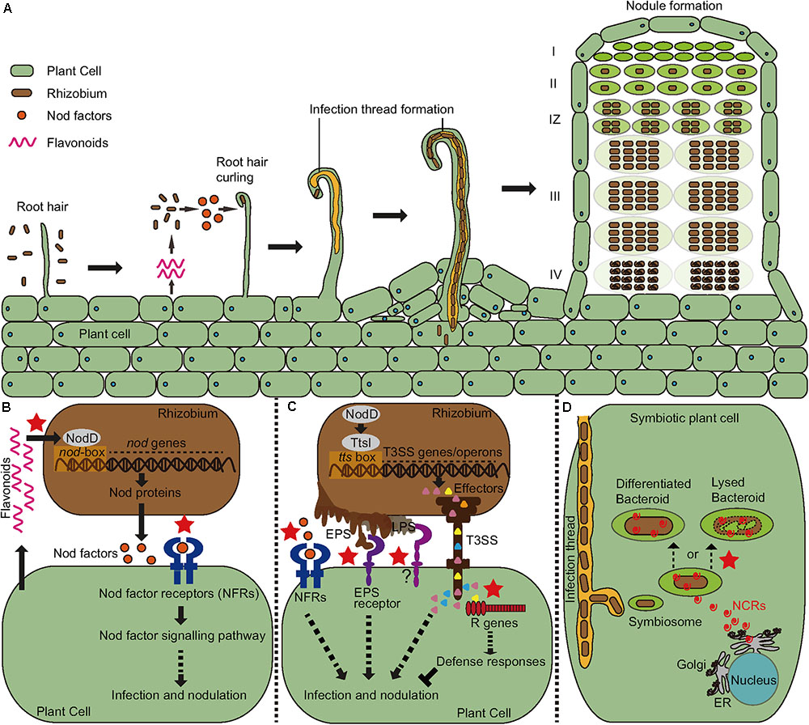
Rhizobial invasion of legumes is primarily mediated by a plant-made tubular invagination called an infection thread (IT). Research has shown that various genes are involved in some of the processes of the legume-rhizobia interaction.
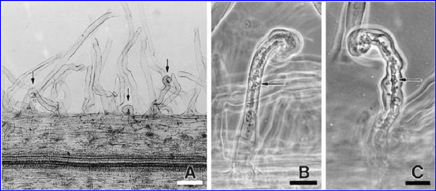
- RINRK1 (Rhizobial Infection Receptor-like Kinase1), that is induced by Nod factors (NFs) and is involved in IT formation but not nodule organogenesis. A paralog, RINRK2, plays a relatively minor role in infection. RINRK1 is required for full induction of early infection genes, including Nodule Inception (NIN), encoding an essential nodulation transcription factor. See Li et al. (2019).
- HAR1 mediates nitrate inhibition and autoregulation of nodulation. Autoregulation of nodulation involves root-to-shoot-to-root long-distance communication, and HAR1 functions in shoots. HAR1 is critical for the inhibition of nodulation at 10 mM nitrate. The nitrate-induced CLE-RS2 glycopeptide binds directly to the HAR1 receptor, this result suggests that CLE-RS2/HAR1 long-distance signaling plays an important role in the both nitrate inhibition and the autoregulation of nodulation. See Okamoto and Kawaguchi (2015).
- SYMRKL1, encodes a protein with an ectodomain predicted to be nearly identical to that of SYMRK and is required for normal infection thread formation. See Frank et al. (2023).
1 UMI-based single cell data from microdroplets
The dataset is based on a microdroplet-based method from 10X chromium. We remember that a microdroplet single cell sequencing protocol works as follow:
- each cell is isolated together with a barcode bead in a gel/oil droplet
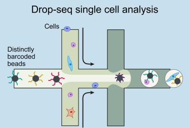
- each transcript in the cell is captured via the bead and assigned a cell barcode and a transcript unique molecular identifier (UMI)
- 3’ reverse transcription of mRNA into cDNA is then performed in preparation to the PCR amplification
- the cDNA is amplified through PCR cycles
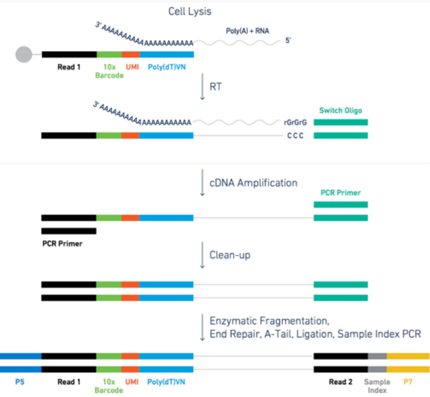
1.1 The raw data in practice
Let’s look at a specific read and its UMI and cell barcode. The data is organized in paired-end reads (written on fastq files), where the first fastq file contains reads in the following format
@SRR8363305.1 1 length=26
NTGAAGTGTTAAGACAAGCGTGAACT
+SRR8363305.1 1 length=26
#AAFFJJJJJJJJJJJJJJJJFJJJJHere, the first 16 characters NTGAAGTGTTAAGACA represent the cell barcode, while the last 10 characters AGCGTGAACT are the transcript UMI tag. The last line represents the quality scores of the 26 characters of barcode+UMI.
The associated second fastq file contains reads of 98nt as the following
@SRR8363305.1 1 length=98
NCTAAAGATCACACTAAGGCAACTCATGGAGGGGTCTTCAAAGA
CCTTGCAAGAAGTACTAACTATGGAGTATCGGCTAAGTCAANCN
TGTATGAGAT
+SRR8363305.1 1 length=98
#A<77AFJJFAAAJJJ7-7-<7FJ-7----<77--7FAAA--
<JFFF-7--7<<-F77---FF---7-7A-777777A-<
-7---#-#A-7-7--7--The 98nt-long string of characters in the second line is a partial sequence of the cDNA transcript. Specifically, the 10X chromium protocol used for sequencing the data is biased towards the 3’ end, because the sequencing is oriented from the 3’ to the 5’ end of the transcripts. The last line contains the corresponding quality scores.
1.2 Alignment and expression matrix
The data is aligned with cellranger, a completely automatized pipeline implemented by 10X for 10X-genomics data.
Apart from the data, the output contains an interactive document reporting the quality of the data and a small preliminary UMAP plot and clustering. In this report it is especially instructive to look at the knee plot.
The knee plot is created by plotting the number of unique molecular identifiers (UMIs) or reads against the number of cells sequenced, sorted in descending order. The UMIs or reads are a measure of the amount of RNA captured for each cell, and thus a measure of the quality of the data. The plot typically shows a steep slope at the beginning, followed by a plateau, and then a gradual decrese into a second slope and a final plateau.
- The steep slope represents the initial cells that are of high quality and have the highest number of UMIs or reads.
- The first plateau represents the cells that have lower quality data, and the gradual decrease represents the addition of droplets with even lower quality data.
- Usually, beyond the first slope, you have droplets that are either empty or of so poor quality, that they are not worth keeping for analysis.
- The height of the last plateau gives you an idea of the presence of ambient RNA inside droplets. If the last plateau is located high up, then the corresponding amount of UMIs consist of background ambient RNA which likely pollutes all cells in your data.
Below, the knee plot from the control 1 sample used in this analysis. You can see that around 10,000 cells with above ~1000 UMIs seems to be coinsidered of decent quality by cellranger (the part of line coloured in blue). Note that the last plateau is located at a very low amount of UMIs, meaning there is not really any relevant contamination from ambient RNA.

Something more about knee plots
The background RNA (sequenced together with the transcript coming from the cell of interest) makes up the ambient plateau: the same background RNA is contained in empty droplets. If your dataset has extremely few UMI counts in empty droplets, then there is not much background RNA present - This is the best situation in which you can find yourself. See Exhibit A in Figure 6.
If you have a dataset where you can identify an empty droplet plateau by eye (Exhibit B in Figure 6), and these empty droplets have 50 or 100 or several hundred counts, then it can be advisable to use a specific software to remove the background transcripts (e.g. CellBender (Fleming et al. (2023)), SoupX (Young and Behjati (2020))).
If you have a dataset with so much background RNA that you cannot identify the empty droplet plateau yourself by eye (Exhibit C in Figure 6), then any software to remove background transcripts will also likely have a difficult time. Such the algorithms might be worth a try, but you should strongly consider re-running the experiment, as the knee plot points to a real QC failure

2 Preprocessing
Learning outcome
We will answer to the following questions:
- How can I import single-cell data into R?
- How are different types of data/information (e.g. cell information, gene information, etc.) stored and manipulated?
- How can I obtain basic summary metrics for cells and genes and filter the data accordingly?
- How can I visually explore these metrics?
We start by loading all the packages necessary for the analysis and setup a few things
source("../Scripts/script.R")options(future.seed=TRUE)plan("multicore", workers = 8)
options(future.globals.maxSize = 8 * 1024^3)2.1 Import data
We import the data reading the matrix files aligned by 10X. Those are usually contained in a folder with a name of the type aligned_dataset/outs/filtered_bc_matrix, that 10X Cellranger creates automatically after the alignment. You will use such a folder when your own data is aligned. In this tutorial, the aligned data is in the folder used below. The command for reading the data is simply Read10X.
Important
When using your own data, you need to use the correct folder name below according to the 10X folder structure aligned_dataset/outs/filtered_bc_matrix.
Control1 <- Read10X("../Data/control_1/")Note that we are loading only one dataset (control_1, one of the two control replicates). Another control dataset, and two infected datasets, have already been preprocessed and will be used later - so we will now focus on the preprocessing of a single dataset. In general, when you have multiple datasets, you must preprocess them one at a time before integrating them together.
What we obtain in the command above is an expression matrix. Look at the first 10 rows and columns of the matrix (whose rows represent genes and columns droplets/cells) - the dots are zeros (they are not stored in the data, which has a compressed format called dgCMatrix), and are the majority of the expression values obtained in scRNA data!
Control1[1:10,1:10] [[ suppressing 10 column names ‘AAACCCAAGGGCAGTT-1’, ‘AAACCCAAGTCAGCGA-1’, ‘AAACCCACACTAACCA-1’ ... ]]
10 x 10 sparse Matrix of class "dgCMatrix"
LotjaGi0g1v0000100 . . . . . . . . . .
LotjaGi0g1v0000200 . . . . . . . . . .
LotjaGi0g1v0000300 . . . . . . . . . .
LotjaGi0g1v0000400 . . . . . . 1 1 . .
LotjaGi0g1v0000500 . . . . . . . . . .
LotjaGi0g1v0000600 . . . . . . . . . .
LotjaGi0g1v0000700 . . . . . . . . . .
LotjaGi0g1v0000800 . . . . 1 . . . . .
LotjaGi0g1v0000900_LC . . . . . . . . . .
LotjaGi0g1v0001000_LC . . . . . . . . . .What is the percentage of zeros in this matrix? You can see it for yourself below - it is a lot, but quite surprisingly we can get a lot of information from the data!
cat("Number of zeros: ")
zeros <- sum(Control1==0)
cat( zeros )Number of zeros: 307060673cat("Number of expression entries: ")
total <- dim(Control1)[1] * dim(Control1)[2]
cat( total )Number of expression entries: 329798055cat("Percentage of zeros: ")
cat( zeros / total * 100 )Percentage of zeros: 93.105672.2 Create a single cell object in Seurat
We use our count matrix to create a Seurat object. A Seurat object allows you to store the count matrix and future modifications of it (for example its normalized version), together with information regarding cells and genes (such as clusters of cell types) and their projections (such as PCA and tSNE). We will go through these elements, but first we create the object with CreateSeuratObject:
Control1_seurat <- CreateSeuratObject(counts = Control1,
project = "Control1_seurat",
min.cells = 3,
min.features = 200)Warning message:
“Feature names cannot have underscores ('_'), replacing with dashes ('-')”
Warning message:
“Feature names cannot have underscores ('_'), replacing with dashes ('-')”The arguments of the command are * counts: the count matrix * project: a project name * min.cells: a minimum requirement for genes, in our case saying they must be expressed in at least 3 cells. If not, they are filtered out already now when creating the object. * min.features: a minimum requirement for cells. Cells having less than 200 expressed genes are removed from the beginning from the data.
Values for the minimum requirements chosen above are standard checks when running the analysis. Droplets not satisfying those requirements are of extremely bad quality and not worth carrying on during the analysis (remember the knee plot).
How many genes and cells have been filtered out?
cat("Starting Genes and Cells:\n")
cat( dim(Control1) )
cat("\nFiltered Genes and Cells:\n")
cat( dim(Control1) - dim(Control1_seurat) )
cat("\nRemaining Genes and Cells:\n")
cat( dim(Control1_seurat) )Starting Genes and Cells:
30585 10783
Filtered Genes and Cells:
6747 11
Remaining Genes and Cells:
23838 10772We want to use this data later in the analysis with other Control and Infected datasets. Therefore we add a Condition to the metadata table, and for this dataset we establish that each cell is Control.
Important
When using your own data, do not forget to write the correct condition label.
Control1_seurat <- AddMetaData(object = Control1_seurat,
metadata = "Control",
col.name = "Condition")2.2.1 Content of a Seurat Object
What is contained in the Seurat object? We can use the command str to list the various slots of the object.
str(Control1_seurat, max.level = 2)Formal class 'Seurat' [package "SeuratObject"] with 13 slots
..@ assays :List of 1
..@ meta.data :'data.frame': 10772 obs. of 4 variables:
..@ active.assay: chr "RNA"
..@ active.ident: Factor w/ 1 level "Control1_seurat": 1 1 1 1 1 1 1 1 1 1 ...
.. ..- attr(*, "names")= chr [1:10772] "AAACCCAAGGGCAGTT-1" "AAACCCAAGTCAGCGA-1" "AAACCCACACTAACCA-1" "AAACCCACATGATCTG-1" ...
..@ graphs : list()
..@ neighbors : list()
..@ reductions : list()
..@ images : list()
..@ project.name: chr "Control1_seurat"
..@ misc : list()
..@ version :Classes 'package_version', 'numeric_version' hidden list of 1
..@ commands : list()
..@ tools : list()The first slot is called assays, and it contains all the count matrices we have collected during our analysis when, for example, normalizing data or doing other transformations of it. Right now we only have the RNA assay with the raw counts:
Control1_seurat@assays$RNA
Assay data with 23838 features for 10772 cells
First 10 features:
LotjaGi0g1v0000100, LotjaGi0g1v0000200, LotjaGi0g1v0000300,
LotjaGi0g1v0000400, LotjaGi0g1v0000500, LotjaGi0g1v0000700,
LotjaGi0g1v0000800, LotjaGi0g1v0001100, LotjaGi0g1v0001200,
LotjaGi0g1v0001400 You can always select which matrix is currently in use for the analysis by assigning it to DefaultAssay(). The default assay is often changed automatically by Seurat, for example the normalized assay is used as default after normalization is performed.
DefaultAssay(object = Control1_seurat) <- "RNA"cat("Your default assay is ")
cat(DefaultAssay(object = Control1_seurat))Your default assay is RNAThe second slot is the one that contains the metadata for each cell. It is easily visualized as a table (the command head shows only the first 6 rows of the table):
head( Control1_seurat@meta.data )| orig.ident | nCount_RNA | nFeature_RNA | Condition | |
|---|---|---|---|---|
| <fct> | <dbl> | <int> | <chr> | |
| AAACCCAAGGGCAGTT-1 | Control1_seurat | 3567 | 1919 | Control |
| AAACCCAAGTCAGCGA-1 | Control1_seurat | 7015 | 2751 | Control |
| AAACCCACACTAACCA-1 | Control1_seurat | 1484 | 828 | Control |
| AAACCCACATGATCTG-1 | Control1_seurat | 20942 | 4711 | Control |
| AAACCCAGTAGCTTGT-1 | Control1_seurat | 29105 | 5157 | Control |
| AAACCCAGTCTCTCAC-1 | Control1_seurat | 6115 | 2124 | Control |
The table contains a name for the dataset (orig.ident, useful to distinguish multiple datasets merged together), how many RNA transcripts are contained in each cell (nCount_RNA), the number of expressed genes in each cell (nFeature_RNA), and the Condition (added by us previously). More metadata can be added along the analysis, and some is added automatically by Seurat when running specific commands.
The assays and meta.data slots are the most relevant and useful to know - the other ones are mostly for internal use by Seurat and we do not go into detail with those.
2.3 Finding filtering criteria
We want to look in depth at which droplets do not contain good quality data, so that we can filter them out. The standard approach - which works quite well - is to study the distribution of various quality measures and remove doublets (droplets containing more than one cell) which can confound the analysis results. We will look at some plots and decide some threshold, then we will apply them at the end after looking at all the histograms.
2.3.1 Quality measure distributions
A first step is to calculate the percentage of mitochondrial and chloroplastic genes. A high percentage indicates the presence of spilled material from broken cells. We use the command PercentageFeatureSet and provide the pattern of the gene ID which corresponds to mitochondrial and ribosomal genes. The percentages are saved into the metadata simply by using the double squared brackets [[.
Control1_seurat[["percent.mt"]] <- PercentageFeatureSet(Control1_seurat,
pattern = "LotjaGiM1v")
Control1_seurat[["percent.chloroplast"]] <- PercentageFeatureSet(Control1_seurat,
pattern = "LotjaGiC1v")You can see the new metadata is now added for each cell
head( Control1_seurat@meta.data )| orig.ident | nCount_RNA | nFeature_RNA | Condition | percent.mt | percent.chloroplast | |
|---|---|---|---|---|---|---|
| <fct> | <dbl> | <int> | <chr> | <dbl> | <dbl> | |
| AAACCCAAGGGCAGTT-1 | Control1_seurat | 3567 | 1919 | Control | 4.6818054 | 0.02803476 |
| AAACCCAAGTCAGCGA-1 | Control1_seurat | 7015 | 2751 | Control | 0.7127584 | 0.04276550 |
| AAACCCACACTAACCA-1 | Control1_seurat | 1484 | 828 | Control | 6.6037736 | 0.06738544 |
| AAACCCACATGATCTG-1 | Control1_seurat | 20942 | 4711 | Control | 0.4775093 | 0.12415242 |
| AAACCCAGTAGCTTGT-1 | Control1_seurat | 29105 | 5157 | Control | 0.2954819 | 0.05497337 |
| AAACCCAGTCTCTCAC-1 | Control1_seurat | 6115 | 2124 | Control | 1.6026165 | 0.01635323 |
2.3.1.1 Number of transcripts per cell
We plot a histogram of the number of transcripts per cell in Figure 7 below. On the right, we zoom into the histogram. We want to filter out the cells with the lowest number of transcripts - often there is a peak we can identify with a group of low-quality cells. Here we can choose to remove cells with less than ~700 transcripts (some people prefere to do a lighter filtering, and would for example set a threshold to a lower value). We remove also cells with too many transcripts that might contain some weird transcripts - which is also helpful for normalization because it removes some outlying values. For those we can set a limit to 30000, where there is a very thin tail in the histogram.
options(repr.plot.width=14, repr.plot.height=5)
plot1 <- ggplot(Control1_seurat@meta.data, aes(x=nCount_RNA)) +
geom_histogram(fill="#69b3a2", color="#e9ecef", alpha=0.9)
plot2 <- ggplot(Control1_seurat@meta.data, aes(x=nCount_RNA)) +
geom_histogram(fill="#69b3a2", color="#e9ecef", alpha=0.9) +
xlim(0,2000)
plot1 + plot2`stat_bin()` using `bins = 30`. Pick better value with `binwidth`.
`stat_bin()` using `bins = 30`. Pick better value with `binwidth`.
Warning message:
“Removed 7668 rows containing non-finite values (`stat_bin()`).”
Warning message:
“Removed 2 rows containing missing values (`geom_bar()`).”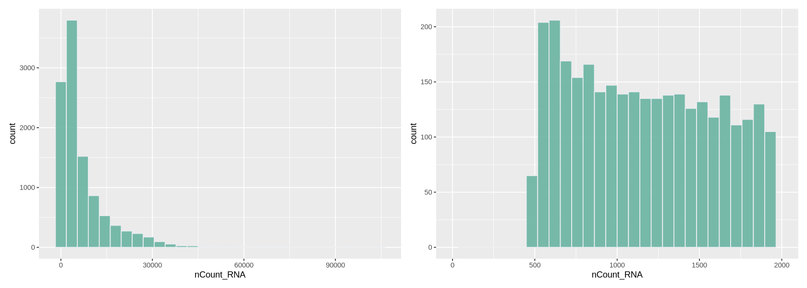
2.3.1.2 Number of detected genes per cell
Here we work similarly to filter out cells based on how many genes are detected (Figure 8). The right-side plot is a zoom into the histogram. It seems easy to set the thresholds at ~400 and ~7000 detected genes.
options(repr.plot.width=14, repr.plot.height=5)
plot1 <- ggplot(Control1_seurat@meta.data, aes(x=nFeature_RNA)) +
geom_histogram(fill="#69b3a2", color="#e9ecef", alpha=0.9)
plot2 <- ggplot(Control1_seurat@meta.data, aes(x=nFeature_RNA)) +
geom_histogram(fill="#69b3a2", color="#e9ecef", alpha=0.9) +
xlim(0,1000)
plot1 + plot2`stat_bin()` using `bins = 30`. Pick better value with `binwidth`.
`stat_bin()` using `bins = 30`. Pick better value with `binwidth`.
Warning message:
“Removed 7793 rows containing non-finite values (`stat_bin()`).”
Warning message:
“Removed 2 rows containing missing values (`geom_bar()`).”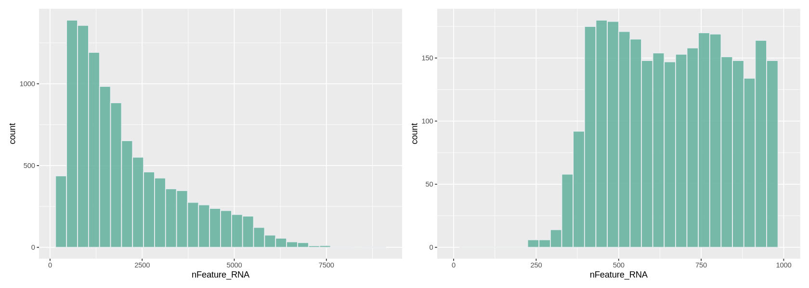
2.3.1.3 Mitochondrial and Chloroplast percentages
The percentages of mitochondrial and chloroplastic transcripts tells us the data is of good quality, since most cells have low values of those (Figure 9). Thresholds are usually set between 5% and 20% in single cell data analysis. In the paper, thresholds were for example set at 20%.
options(repr.plot.width=14, repr.plot.height=5)
plot1 <- ggplot(Control1_seurat@meta.data, aes(x=percent.mt)) +
geom_histogram(fill="#69b3a2", color="#e9ecef", alpha=0.9)
plot2 <- ggplot(Control1_seurat@meta.data, aes(x=percent.chloroplast)) +
geom_histogram(fill="#69b3a2", color="#e9ecef", alpha=0.9)
plot1 + plot2`stat_bin()` using `bins = 30`. Pick better value with `binwidth`.
`stat_bin()` using `bins = 30`. Pick better value with `binwidth`.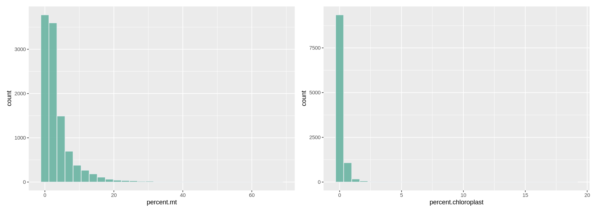
2.3.1.4 Counts-Features relationship
In Figure 10 below, we look at the plot of the number of transcripts per cell vs the number of detected genes per cell. Usually, those two measure grow simultaneously. At lower counts the relationship is quite linear, then becomes a curve, typically bending in favour of the number of transcripts per cell. You can see below that each dot (representing a droplet) is coloured by percentage of mitochondria. Droplets with a high percentage of mitochondrial genes also have very low amount of transcripts and detected genes, confirming that high mitochondrial content is a measure of low quality.
options(repr.plot.width=14, repr.plot.height=5)
meta <- Control1_seurat@meta.data %>% arrange(percent.mt)
plot1 <- ggplot( meta, aes(x=nCount_RNA, y=nFeature_RNA, colour=percent.mt)) +
geom_point(alpha=0.75, size=5)+
geom_smooth(se=TRUE, method="loess")
plot1`geom_smooth()` using formula = 'y ~ x'
Warning message:
“The following aesthetics were dropped during statistical transformation: colour
ℹ This can happen when ggplot fails to infer the correct grouping structure in
the data.
ℹ Did you forget to specify a `group` aesthetic or to convert a numerical
variable into a factor?”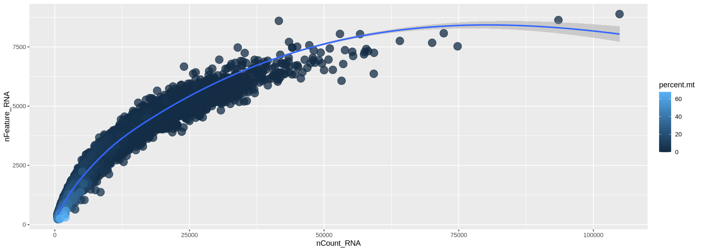
In a similar way the chloroplastic genes confirm the pattern of low quality droplets.
options(repr.plot.width=14, repr.plot.height=5)
meta <- Control1_seurat@meta.data %>% arrange(percent.chloroplast)
plot1 <- ggplot( meta, aes(x=nCount_RNA, y=nFeature_RNA, colour=percent.chloroplast)) +
geom_point(alpha=0.75, size=5)+
geom_smooth(se=TRUE, method="loess")
plot1`geom_smooth()` using formula = 'y ~ x'
Warning message:
“The following aesthetics were dropped during statistical transformation: colour
ℹ This can happen when ggplot fails to infer the correct grouping structure in
the data.
ℹ Did you forget to specify a `group` aesthetic or to convert a numerical
variable into a factor?”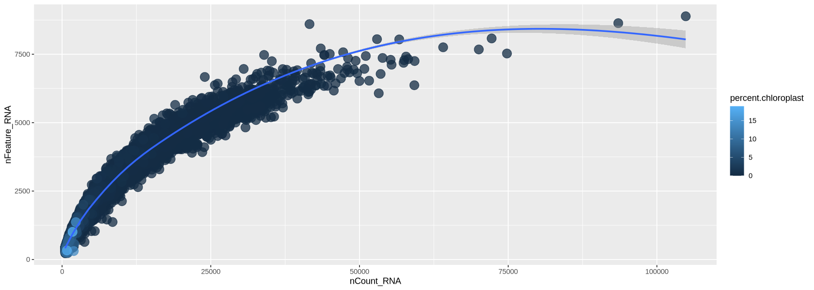
2.3.2 Filtering with the chosen criteria
Here we use the command subset and impose the criteria we chose above looking at the histograms. We set each criteria for keeping cells of good quality using the names of the features in metadata. We print those names to remember them.
cat("Meta data names:\n")
cat( names(Control1_seurat@meta.data), sep='; ' )Meta data names:
orig.ident; nCount_RNA; nFeature_RNA; Condition; percent.mt; percent.chloroplastThe filtered object is called Control1_seurat_filt
Control1_seurat_filt <- subset(x = Control1_seurat,
subset = nCount_RNA > 700 &
nCount_RNA < 35000 &
nFeature_RNA > 400 &
nFeature_RNA < 7000 &
percent.mt < 5 &
percent.chloroplast < 5)
cat("Filtered Genes and Cells: ")
cat( dim(Control1_seurat) - dim(Control1_seurat_filt) )
cat("\nRemaining Genes and Cells: ")
cat( dim(Control1_seurat_filt) )Filtered Genes and Cells: 0 2762
Remaining Genes and Cells: 23838 8010Now the transcripts vs genes can be seen in Figure 12. The relationship is much more linear than previously after the removal of extreme values for transcripts and detected genes.
options(repr.plot.width=14, repr.plot.height=5)
meta <- Control1_seurat_filt@meta.data %>% arrange(percent.mt)
plot1 <- ggplot( meta, aes(x=nCount_RNA, y=nFeature_RNA, colour=percent.mt)) +
geom_point(alpha=0.75, size=5)+
geom_smooth(se=TRUE, method="loess")
plot1`geom_smooth()` using formula = 'y ~ x'
Warning message:
“The following aesthetics were dropped during statistical transformation: colour
ℹ This can happen when ggplot fails to infer the correct grouping structure in
the data.
ℹ Did you forget to specify a `group` aesthetic or to convert a numerical
variable into a factor?”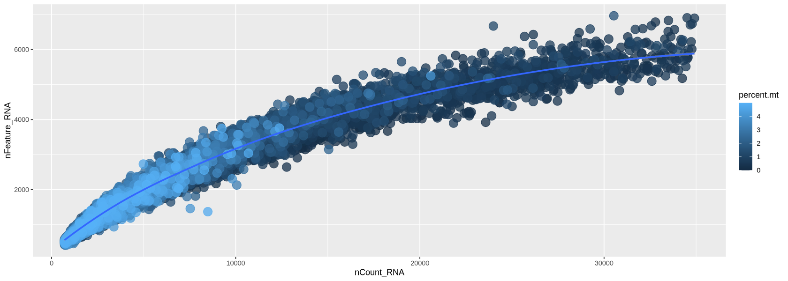
2.4 Normalization
scRNA-seq data is affected by highly variable RNA quantities and qualities across different cells. Furthermore, it is often subject to batch effects, sequencing depth differences, and other technical biases that can confound downstream analyses.
Normalization methods are used to adjust for these technical variations so that true biological differences between cells can be accurately identified.
Some commonly used normalization methods in scRNA-seq data include the following:
- Total count normalization: Normalizing the read counts to the total number of transcripts in each sample
- TPM (transcripts per million) normalization: Normalizing the read counts to the total number of transcripts in each sample, scaled to a million
- Library size normalization: Normalizing the read counts to the total number of reads or transcripts in each sample, adjusted for sequencing depth
All the above suffer from distorting some gene expressions, especially if the data varies a lot in term of sequencing depth. A new and more advanced method, at the moment the state-of-the-art, is SCTransform (Hafemeister and Satija (2019)), a software package that can correct for technical sources of variation and remove batch effects.
2.4.1 Finding technical sources of variation
Before normalizing we want to check for technical sources of variation in the data. One of those is the total number of transcripts: two similar cells might be sequenced at different depth. This influences of course normalization. The influence of the number of transcripts per cell is however always removed by SCtransform.
We want to look into other possible sources of variation. Those are usually quantities we calculate for each cell, for example the percentage of mitochondrial and chloroplastic genes.
To see if those quantities actually influence our data a lot, we check how much is their highest correlation with the first 10 components of the PCA of the dataset. In short, we see if any technical variation is such that it explains much of the variability of the data, covering possibly biological signal.
We now use the function plotCorrelations to plot the highest correlation of three quantities with the PCA: number of transcripts, percent of mitochondrial genes and percent of chloroplastic genes. You will see in Figure 13 how there is little correlation for the two percentages, for which we do not need to worry about, while there is correlation with the total number of transcripts per cell (this is always expected and, as mentioned before, is removed automatically by the normalization process). We created the function plotCorrelations specifically for the course, together with a few others, mostly for plotting or handling tables. You can find them in the file script.R.
plotCorrelations( object=Control1_seurat, measures=c('nCount_RNA', 'percent.mt', 'percent.chloroplast') )`geom_smooth()` using formula = 'y ~ x'
`geom_smooth()` using formula = 'y ~ x'
`geom_smooth()` using formula = 'y ~ x'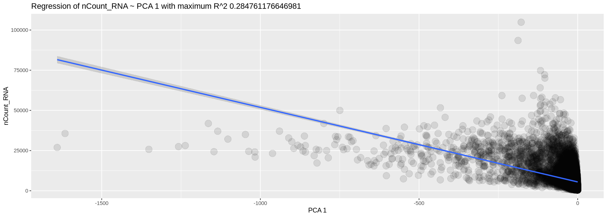
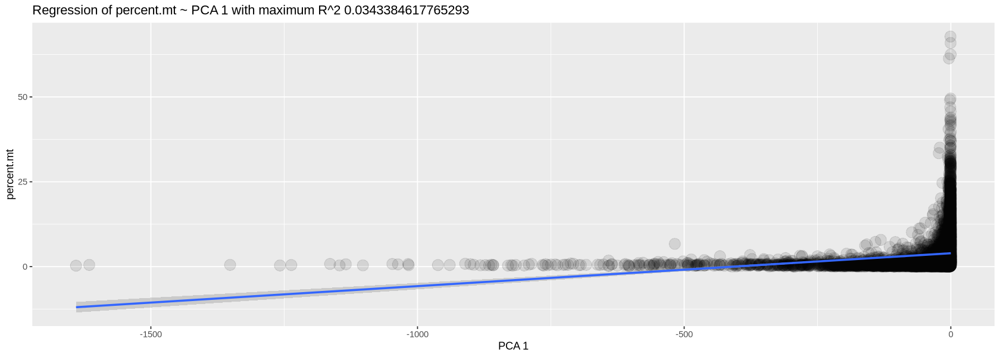
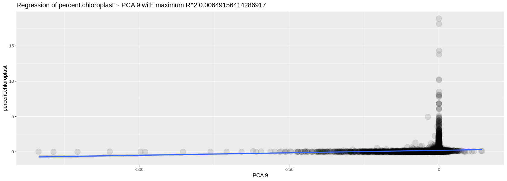
2.4.2 Executing normalization
We run SCtransform normalization below. Here you can choose to subsample some cells to do the normalization (ncells option): this is useful to avoid ending up waiting for a long time. A few thousands cells is enough.
You can also choose how many genes to consider for normalization (variable.features.n option): in this case it is best to use the genes that vary the most their expression across cells. We look at a histogram (Figure 14) of the variance of each gene to choose a threshold to identify highly-variable genes.
variance_genes <- apply( as.matrix(Control1_seurat_filt[['RNA']]@counts), 1, var)
options(repr.plot.width=14, repr.plot.height=5)
plot1 <- ggplot(data.frame(variance_genes), aes(variance_genes)) +
geom_histogram(fill="#69b3a2", color="#e9ecef", alpha=0.9) + xlim(0,1)
plot1Warning message in asMethod(object):
“sparse->dense coercion: allocating vector of size 1.4 GiB”
`stat_bin()` using `bins = 30`. Pick better value with `binwidth`.
Warning message:
“Removed 3289 rows containing non-finite values (`stat_bin()`).”
Warning message:
“Removed 2 rows containing missing values (`geom_bar()`).”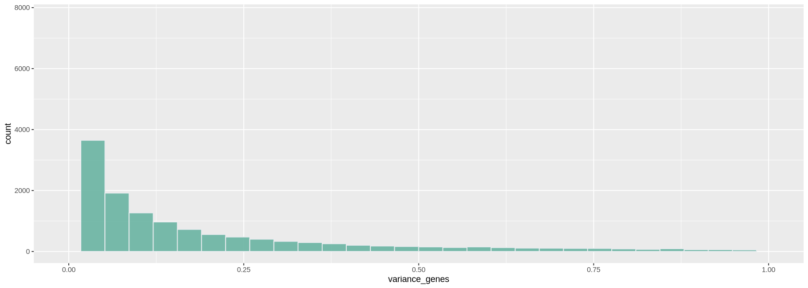
hvighly_var_genes <- variance_genes > .1
cat("The total number of highly variable genes selected is: ")
cat(sum( hvighly_var_genes ))The total number of highly variable genes selected is: 9955Control1_seurat_norm <- SCTransform(Control1_seurat_filt,
return.only.var.genes = FALSE,
ncells = 3000,
variable.features.n = sum( hvighly_var_genes ),
verbose = FALSE)Normalized data is now in the object Control1_seurat_norm, in a new assay called SCT. This assay is now the default used for data analysis: you can verify it very easily below:
cat("Your default assay is ")
cat(DefaultAssay(object = Control1_seurat_norm))Your default assay is SCT2.4.3 Visualizing the result
Now we plot the UMAP plot of the data to have a first impression of how the data is structured (presence of clusters, how many, etc.). First of all, we create a PCA plot, which tells us how many PCA components are of relevance with the elbow plot of Figure 15. In the elbow plot, we see the variability of each component in descending order. Note how, after a few rapidly descending components, there is an elbow. We schoose a threshold just after the elbow (for example at 15), which means those components will be used to calculate some other things of relevance in the data, such as distance between cells and the UMAP projection of Figure 16: specific commands using PCA allow to choose the components, and we will set 10 with the option dims = 1:15.
Control1_seurat_norm <- FindVariableFeatures(Control1_seurat_norm,
nfeatures = sum( hvighly_var_genes ))Control1_seurat_norm <- RunPCA(object = Control1_seurat_norm,
verbose = FALSE, seed.use = 123)ElbowPlot(Control1_seurat_norm, ndims = 30)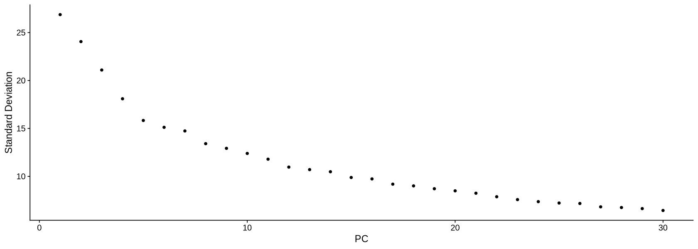
We calculate the projection using the UMAP algorithm (McInnes et al. (2018), Becht et al. (2019)). The parameters a and b will change how stretched or sparsed the data looks like. When you do your own UMAP projection, you can avoid setting a and b, and those will be chosen automatically by the command.
Control1_seurat_norm <- RunUMAP(object = Control1_seurat_norm,
a = .8, b=1,
dims = 1:15,
verbose = FALSE,
seed.use = 123)Warning message:
“The default method for RunUMAP has changed from calling Python UMAP via reticulate to the R-native UWOT using the cosine metric
To use Python UMAP via reticulate, set umap.method to 'umap-learn' and metric to 'correlation'
This message will be shown once per session”
Found more than one class "dist" in cache; using the first, from namespace 'spam'
Also defined by ‘BiocGenerics’
Found more than one class "dist" in cache; using the first, from namespace 'spam'
Also defined by ‘BiocGenerics’
In Figure 16 we can see the resulting projection. The result looks pretty neat and structured (we can clearly see there are various clusters).
options(repr.plot.width=10, repr.plot.height=8)
UMAPPlot(object = Control1_seurat_norm)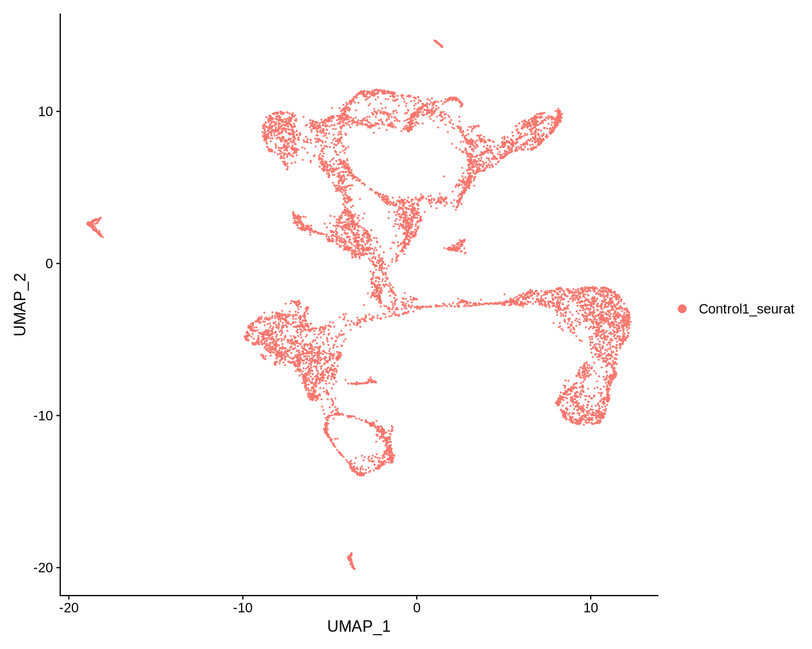
2.5 Removing doublets
Doublets removal is part of filtering, but it needs normalized data to work. This is why we do it after using SCtransform.
Doublets (and the very rare multiplets) refer to droplets that contain the transcriptional profiles of two or more distinct cells. Doublets can occur during the cell dissociation process or when two or more cells are captured in the same droplet during the library preparation step.
It is quite obvious that a doublet transcriptional profile can confound downstream analyses, such as cell clustering and differential gene expression analysis. Most doublet detectors, like DoubletFinder (McGinnis, Murrow, and Gartner (2019)) which we will use, simulates doublets and then finds cells in the data which are similar to the simulated doublets. Most such packages need an idea of the number/proportion of expected doublets in the dataset. As indicated from the Chromium user guide, expected doublet rates are about as follows:
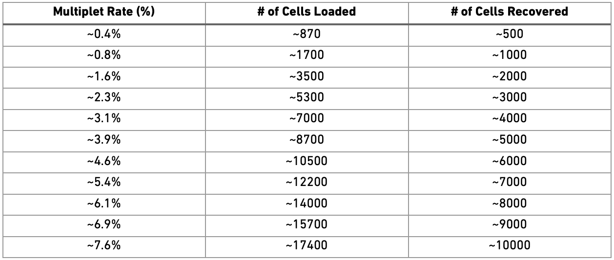
The data we are using contained about 10000 cells per sample (as in the knee plot at the beginning), hence we can assume that it originates from around 18000 loaded cells and should have a doublet rate at about 7.6%.
Note
Doublet prediction, like the rest of the filtering, should be run on each sample separately.
Here, we apply DoubletFinder to predict doublet cells. Most parameters are quite standard, we mostly need to choose nExp (expected number of doublets), PCs (number of principal components to use), sct (use the normalized data). The last three option are not part of the package, but have been added by creating a slightly modified version (here) - they allow to use multiple cores and a subset of cells for calculations for a considerable speedup. However, the code takes some time to run, so be patient.
nExp <- round(ncol(Control1_seurat_norm) * 0.076) # expected doublet rateControl1_seurat_norm <- doubletFinder_v3(Control1_seurat_norm,
pN = 0.25, #proportion of doublets to simulate)
pK = 0.09,
nExp = nExp,
PCs = 1:15,
sct=TRUE,
workers=8,
future.globals.maxSize = 8*1024^13,
seurat.ncells=3000)Loading required package: fields
Loading required package: spam
Spam version 2.10-0 (2023-10-23) is loaded.
Type 'help( Spam)' or 'demo( spam)' for a short introduction
and overview of this package.
Help for individual functions is also obtained by adding the
suffix '.spam' to the function name, e.g. 'help( chol.spam)'.
Attaching package: ‘spam’
The following object is masked from ‘package:stats4’:
mle
The following objects are masked from ‘package:base’:
backsolve, forwardsolve
Loading required package: viridisLite
Try help(fields) to get started.
Loading required package: KernSmooth
KernSmooth 2.23 loaded
Copyright M. P. Wand 1997-2009
Loading required package: future
Loading required package: sctransform
Calculating cell attributes from input UMI matrix: log_umi
Variance stabilizing transformation of count matrix of size 23388 by 10680
Model formula is y ~ log_umi
Get Negative Binomial regression parameters per gene
Using 2000 genes, 3000 cells
Found 151 outliers - those will be ignored in fitting/regularization step
Second step: Get residuals using fitted parameters for 23388 genes
Computing corrected count matrix for 23388 genes
Calculating gene attributes
Wall clock passed: Time difference of 1.655047 mins
Determine variable features
Place corrected count matrix in counts slot
Centering data matrix
Set default assay to SCT
PC_ 1
Positive: LotjaGi2g1v0360900, LotjaGi5g1v0359500, LotjaGi6g1v0155900, LotjaGi6g1v0155800, LotjaGi3g1v0321700, LotjaGi3g1v0414900, LotjaGi3g1v0030500, LotjaGi5g1v0211100, LotjaGi3g1v0506700, LotjaGi4g1v0109600
LotjaGi3g1v0009600, LotjaGi1g1v0539300, LotjaGi3g1v0450900, LotjaGi2g1v0269100, LotjaGi3g1v0010900, LotjaGi3g1v0530000, LotjaGi3g1v0373700, LotjaGi4g1v0137700, LotjaGi3g1v0380900, LotjaGi4g1v0309700
LotjaGi1g1v0014300, LotjaGi5g1v0359400, LotjaGi6g1v0071000, LotjaGi3g1v0012400, LotjaGi3g1v0162300, LotjaGi3g1v0554100, LotjaGi1g1v0516900, LotjaGi2g1v0316800, LotjaGi2g1v0285600, LotjaGi2g1v0358600
Negative: LotjaGi6g1v0254300, LotjaGi3g1v0068000, LotjaGi6g1v0286800-LC, LotjaGi1g1v0080000, LotjaGi5g1v0005800, LotjaGi5g1v0269800-LC, LotjaGi5g1v0293100-LC, LotjaGi3g1v0222100, LotjaGi1g1v0006200, LotjaGi6g1v0254700
LotjaGi3g1v0358300, LotjaGi3g1v0329100, LotjaGi3g1v0445300, LotjaGi1g1v0646500-LC, LotjaGi2g1v0157900, LotjaGi3g1v0505900, LotjaGi1g1v0022100, LotjaGi4g1v0076500, LotjaGi4g1v0293000-LC, LotjaGi1g1v0558200
LotjaGi1g1v0577100, LotjaGi3g1v0395900-LC, LotjaGi5g1v0031100, LotjaGi5g1v0288600, LotjaGi3g1v0097800, LotjaGi1g1v0261700, LotjaGi4g1v0207600, LotjaGi4g1v0313900, LotjaGi2g1v0303000, LotjaGi1g1v0515200
PC_ 2
Positive: LotjaGi3g1v0358300, LotjaGi6g1v0254300, LotjaGi1g1v0646500-LC, LotjaGi3g1v0038800, LotjaGi6g1v0253800, LotjaGi6g1v0255000, LotjaGi1g1v0006200, LotjaGi6g1v0254700, LotjaGi5g1v0089300, LotjaGi6g1v0022500
LotjaGi3g1v0329100, LotjaGi6g1v0043900, LotjaGi1g1v0261700, LotjaGi4g1v0313900, LotjaGi2g1v0303000, LotjaGi5g1v0005800, LotjaGi1g1v0277900, LotjaGi6g1v0022600, LotjaGi4g1v0325700, LotjaGi3g1v0222100
LotjaGi1g1v0690000, LotjaGi6g1v0155800, LotjaGi4g1v0293000-LC, LotjaGi2g1v0360900, LotjaGi1g1v0555200, LotjaGi4g1v0284700, LotjaGi3g1v0046800, LotjaGi1g1v0336600, LotjaGi2g1v0239200, LotjaGi2g1v0388100
Negative: LotjaGi5g1v0248500, LotjaGi1g1v0405300, LotjaGi1g1v0074900, LotjaGi1g1v0683300, LotjaGi2g1v0160200, LotjaGi4g1v0018700-LC, LotjaGi5g1v0163900, LotjaGi6g1v0315500, LotjaGi6g1v0078500, LotjaGi2g1v0221100
LotjaGi2g1v0019900, LotjaGi4g1v0217400, LotjaGi5g1v0248600, LotjaGi4g1v0256800, LotjaGi2g1v0002800-LC, LotjaGi3g1v0204100, LotjaGi2g1v0426500, LotjaGi4g1v0297800, LotjaGi6g1v0246700, LotjaGi1g1v0109100
LotjaGi1g1v0109000, LotjaGi3g1v0493400-LC, LotjaGi5g1v0159400, LotjaGi3g1v0086100-LC, LotjaGi5g1v0120700, LotjaGi1g1v0430800-LC, LotjaGi6g1v0292800, LotjaGi1g1v0593900, LotjaGi5g1v0249500, LotjaGi6g1v0216300
PC_ 3
Positive: LotjaGi3g1v0445300, LotjaGi3g1v0505900, LotjaGi1g1v0594900, LotjaGi1g1v0502700, LotjaGi4g1v0275500, LotjaGi1g1v0723600-LC, LotjaGi6g1v0151500, LotjaGi4g1v0208100, LotjaGi5g1v0269800-LC, LotjaGi2g1v0163300
LotjaGi6g1v0028000-LC, LotjaGi4g1v0207600, LotjaGi3g1v0115600, LotjaGi1g1v0475000-LC, LotjaGi2g1v0163500, LotjaGi4g1v0207900, LotjaGi1g1v0022100, LotjaGi1g1v0348000, LotjaGi2g1v0176500-LC, LotjaGi2g1v0406200
LotjaGi5g1v0266100, LotjaGi2g1v0402200, LotjaGi3g1v0359600, LotjaGi3g1v0506700, LotjaGi6g1v0286800-LC, LotjaGi5g1v0211100, LotjaGi3g1v0414900, LotjaGi4g1v0014800, LotjaGi5g1v0296300-LC, LotjaGi1g1v0659300
Negative: LotjaGi1g1v0405300, LotjaGi5g1v0248500, LotjaGi4g1v0018700-LC, LotjaGi1g1v0683300, LotjaGi1g1v0074900, LotjaGi5g1v0163900, LotjaGi3g1v0218300, LotjaGi2g1v0221100, LotjaGi2g1v0019900, LotjaGi6g1v0078500
LotjaGi4g1v0217400, LotjaGi4g1v0256800, LotjaGi2g1v0160200, LotjaGi3g1v0204100, LotjaGi3g1v0068000, LotjaGi5g1v0248600, LotjaGi6g1v0253800, LotjaGi3g1v0038800, LotjaGi1g1v0109100, LotjaGi3g1v0493400-LC
LotjaGi6g1v0315500, LotjaGi3g1v0086100-LC, LotjaGi3g1v0358300, LotjaGi6g1v0246700, LotjaGi2g1v0002800-LC, LotjaGi5g1v0249500, LotjaGi6g1v0043900, LotjaGi2g1v0426500, LotjaGi2g1v0429600, LotjaGi6g1v0255000
PC_ 4
Positive: LotjaGi5g1v0005800, LotjaGi1g1v0558200, LotjaGi5g1v0288600, LotjaGi3g1v0174100, LotjaGi3g1v0222100, LotjaGi3g1v0068000, LotjaGi2g1v0386600, LotjaGi5g1v0166000-LC, LotjaGi6g1v0286800-LC, LotjaGi3g1v0162600
LotjaGi4g1v0121800, LotjaGi3g1v0395900-LC, LotjaGi2g1v0126700, LotjaGi5g1v0099800, LotjaGi4g1v0293000-LC, LotjaGi4g1v0431800, LotjaGi3g1v0178400, LotjaGi1g1v0636800, LotjaGi4g1v0076500, LotjaGi6g1v0012100
LotjaGi2g1v0368200, LotjaGi1g1v0393600, LotjaGi1g1v0114400, LotjaGi4g1v0064700, LotjaGi5g1v0003500, LotjaGi1g1v0340500, LotjaGi3g1v0112700, LotjaGi3g1v0191200, LotjaGi6g1v0069200, LotjaGi3g1v0192300
Negative: LotjaGi5g1v0269800-LC, LotjaGi5g1v0120700, LotjaGi3g1v0420400, LotjaGi2g1v0157900, LotjaGi1g1v0377600, LotjaGi6g1v0253800, LotjaGi6g1v0254700, LotjaGi5g1v0293100-LC, LotjaGi1g1v0613100, LotjaGi1g1v0646500-LC
LotjaGi1g1v0022100, LotjaGi2g1v0303000, LotjaGi3g1v0055400, LotjaGi2g1v0176500-LC, LotjaGi5g1v0119900, LotjaGi1g1v0515200, LotjaGi2g1v0163500, LotjaGi3g1v0445300, LotjaGi3g1v0420800, LotjaGi3g1v0046800
LotjaGi3g1v0115400, LotjaGi3g1v0505900, LotjaGi1g1v0723600-LC, LotjaGi1g1v0690000, LotjaGi1g1v0475000-LC, LotjaGi4g1v0207600, LotjaGi3g1v0329100, LotjaGi1g1v0277900, LotjaGi4g1v0060000, LotjaGi3g1v0420000
PC_ 5
Positive: LotjaGi3g1v0328800, LotjaGi3g1v0222100, LotjaGi4g1v0417500, LotjaGi3g1v0328900, LotjaGi2g1v0450600, LotjaGi3g1v0201800, LotjaGi4g1v0293000-LC, LotjaGi3g1v0378600, LotjaGi5g1v0166000-LC, LotjaGi1g1v0353400
LotjaGi3g1v0395900-LC, LotjaGi6g1v0069200, LotjaGi6g1v0155800, LotjaGi6g1v0286800-LC, LotjaGi3g1v0546100, LotjaGi3g1v0445300, LotjaGi6g1v0326300, LotjaGi3g1v0162300, LotjaGi5g1v0288600, LotjaGi5g1v0031100
LotjaGi1g1v0601700, LotjaGi3g1v0174100, LotjaGi1g1v0594900, LotjaGi5g1v0266100, LotjaGi3g1v0505900, LotjaGi4g1v0284700, LotjaGi1g1v0393600, LotjaGi6g1v0043900, LotjaGi4g1v0269400, LotjaGi1g1v0795300
Negative: LotjaGi4g1v0121800, LotjaGi3g1v0068000, LotjaGi5g1v0099800, LotjaGi3g1v0178400, LotjaGi2g1v0368200, LotjaGi6g1v0012100, LotjaGi1g1v0114400, LotjaGi2g1v0452500, LotjaGi1g1v0240900-LC, LotjaGi5g1v0003500
LotjaGi3g1v0192300, LotjaGi2g1v0301500, LotjaGi4g1v0300800-LC, LotjaGi3g1v0162600, LotjaGi5g1v0120700, LotjaGi5g1v0102500, LotjaGi4g1v0298100, LotjaGi5g1v0100000, LotjaGi3g1v0506700, LotjaGi2g1v0345700
LotjaGi1g1v0137600, LotjaGi3g1v0001800, LotjaGi1g1v0760600, LotjaGi5g1v0094100, LotjaGi1g1v0221300, LotjaGi4g1v0431800, LotjaGi4g1v0455200, LotjaGi6g1v0232200, LotjaGi4g1v0064700, LotjaGi1g1v0300600
[1] "Creating 2670 artificial doublets..."
[1] "Creating Seurat object..."
[1] "Running SCTransform..."
|======================================================================| 100%
|======================================================================| 100%
|======================================================================| 100%
[1] "Running PCA..."
[1] "Calculating PC distance matrix..."
[1] "Computing pANN..."
[1] "Classifying doublets.."We visualize the UMAP plot and which cells are estimated doublets in Figure 18. Fortunately, there are only a few to discard.
options(repr.plot.width=10, repr.plot.height=10)
DF.name = colnames(Control1_seurat_norm@meta.data)[grepl("DF.classification", colnames(Control1_seurat_norm@meta.data))]
DimPlot(Control1_seurat_norm, group.by = DF.name, pt.size = 2,
split.by = DF.name)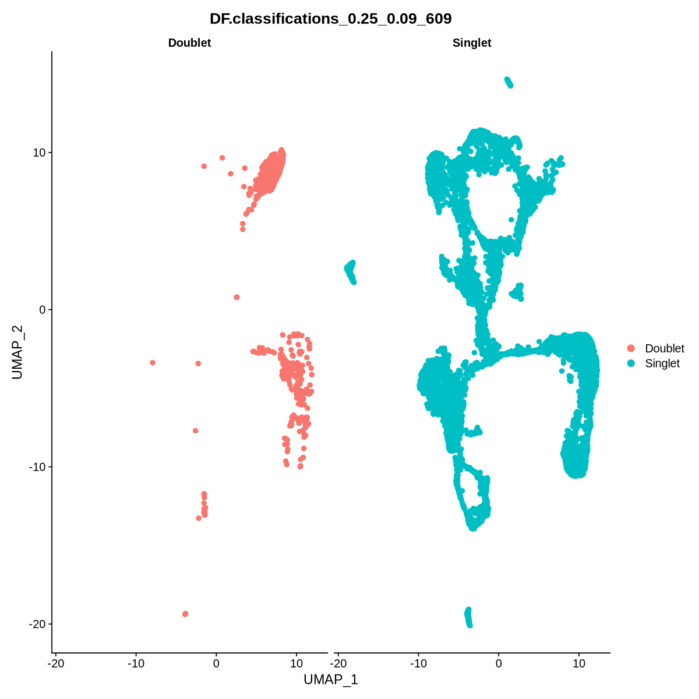
Sometimes doublets have more detected genes than a single cell. In our case, some of the droplets have higher number of genes than the average (the red violin is large also above 3000 detected genes), so there is aclear sign of the presence of some doublets. Of course, as with any filtering, we might remove some actual cells. To be more effective in our filtering, we can select doublets with more than 2000 detected genes when we filter.
VlnPlot(Control1_seurat_norm, features = "nFeature_RNA", group.by = DF.name, pt.size = 0.1)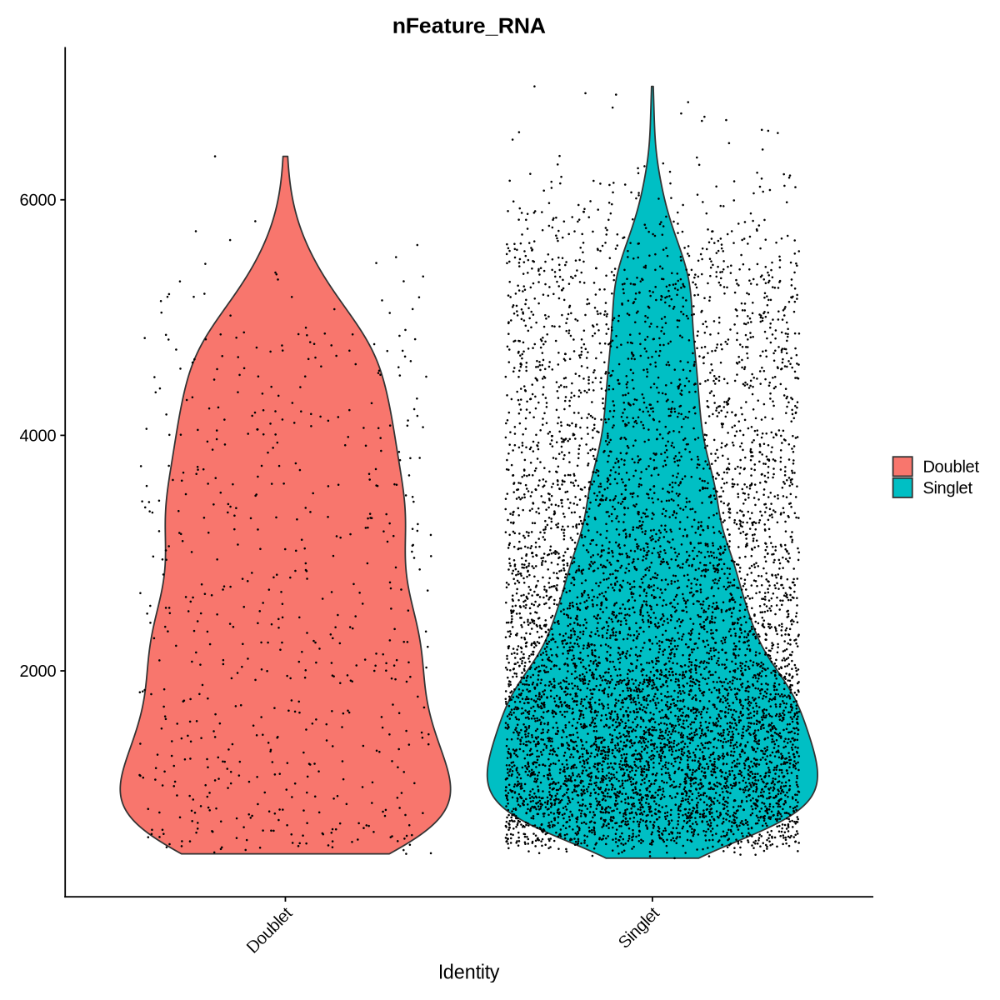
Here we keep only singlets:
Control1_seurat_norm = Control1_seurat_norm[, (Control1_seurat_norm@meta.data[, DF.name] == "Singlet")&(Control1_seurat_norm@meta.data$nFeature_RNA>2000)]We save our data after all the filtering work!
SaveH5Seurat(object = Control1_seurat_norm,
filename = "control1.normalized.h5Seurat",
overwrite = TRUE,
verbose = FALSE)Warning message:
“Overwriting previous file control1.normalized.h5Seurat”
Creating h5Seurat file for version 3.1.5.9900
3 Integration
Integration of scRNA-seq data is useful to combine datasets from different experimental conditions (in our case the Control vs Infected) and sequencing runs, to gain a broader understanding of cellular processes. Integration is challenging due to technical variations and biological differences between the datasets (where we want to remove the formers to study correctly the latters).
Before integrating scRNA-seq datasets, we have applyed quality control and normalization to each sample to ensure consistency and accuracy of the data. Integration can happen using various methods (Adossa et al. (2021)). Seurat uses canonical correlation analysis (CCA) (Stuart et al. (2019), Xinming (2022)) to integrate scRNA-seq datasets from different experimental conditions. CCA identifies shared variation between two datasets while accounting for technical differences, such as batch effects.
The shared covariance patterns can represent biological signals that are common across the datasets, such as cell types or signaling pathways.
We load another control and two infected datasets. Those have been previously preprocessed, so you will not need to. Remember again: each dataset must be preprocessed separately before integration.
Control1_seurat_norm <- LoadH5Seurat("control1.normalized.h5Seurat", verbose = FALSE)Validating h5Seurat file
Control2_seurat_norm <- LoadH5Seurat("../Data/control2.normalized.h5Seurat", verbose = FALSE)
Infected1_seurat_norm <- LoadH5Seurat("../Data/infected1.normalized.h5Seurat", verbose = FALSE)
Infected2_seurat_norm <- LoadH5Seurat("../Data/infected2.normalized.h5Seurat", verbose = FALSE)Validating h5Seurat file
Validating h5Seurat file
Validating h5Seurat file
To integrate the datasets, we need to start creating a list with all datasets.
Gifu.list <- list(Control1_seurat_norm,
Control2_seurat_norm,
Infected1_seurat_norm,
Infected2_seurat_norm)We then start by normalizing each dataset of the list with SCtransform. Here we also have a commented command (with the symbol #) that is not executed, to show how you add technical variations to be removed with the option vars.to.regress, if necessary (this is not the case of the tutorial).
Gifu.list <- lapply(X = Gifu.list, FUN = function(x) {
message("Normalizing\n")
#x <- SCTransform(x, vars.to.regress = c("percent.mt", "percent.chloroplast"), variable.features.n = 10000, return.only.var.genes = FALSE, verbose = TRUE)
x <- SCTransform(x, ncells=3000, variable.features.n = 10000, return.only.var.genes = FALSE, verbose=FALSE)
})Normalizing
Normalizing
Normalizing
Normalizing
Now we apply the CCA (Canonical Correlation Analysis) to put datasets together according to their similarities, while removing differences. The number of genes to use during integration is expressed below as nfeatures. We choose a reasonable number of features, for example 10000, which is similar to what we used in the normalization steps along the tutorial.
Gifu.features <- SelectIntegrationFeatures(object.list = Gifu.list, nfeatures = 10000)
Gifu.list <- PrepSCTIntegration(object.list = Gifu.list, anchor.features = Gifu.features)Gifu.anchors <- FindIntegrationAnchors(object.list = Gifu.list, normalization.method = "SCT",
anchor.features = Gifu.features, reference = c(1,2))
seurat.integrated <- IntegrateData(anchorset = Gifu.anchors, normalization.method = "SCT")Warning message in CheckDuplicateCellNames(object.list = object.list):
“Some cell names are duplicated across objects provided. Renaming to enforce unique cell names.”
Finding anchors between all query and reference datasets
Running CCA
Merging objects
Finding neighborhoods
Finding anchors
Found 8777 anchors
Filtering anchors
Retained 8517 anchors
Running CCA
Merging objects
Finding neighborhoods
Finding anchors
Found 8962 anchors
Filtering anchors
Retained 8046 anchors
Running CCA
Merging objects
Finding neighborhoods
Finding anchors
Found 10128 anchors
Filtering anchors
Retained 9486 anchors
Running CCA
Merging objects
Finding neighborhoods
Finding anchors
Found 7768 anchors
Filtering anchors
Retained 7424 anchors
Running CCA
Merging objects
Finding neighborhoods
Finding anchors
Found 8694 anchors
Filtering anchors
Retained 8493 anchors
Building integrated reference
Merging dataset 1 into 2
Extracting anchors for merged samples
Finding integration vectors
Finding integration vector weights
Integrating data
Integrating dataset 3 with reference dataset
Finding integration vectors
Finding integration vector weights
Integrating data
Warning message:
“UNRELIABLE VALUE: One of the ‘future.apply’ iterations (‘future_lapply-1’) unexpectedly generated random numbers without declaring so. There is a risk that those random numbers are not statistically sound and the overall results might be invalid. To fix this, specify 'future.seed=TRUE'. This ensures that proper, parallel-safe random numbers are produced via the L'Ecuyer-CMRG method. To disable this check, use 'future.seed = NULL', or set option 'future.rng.onMisuse' to "ignore".”
Integrating dataset 4 with reference dataset
Finding integration vectors
Finding integration vector weights
Integrating data
Warning message:
“UNRELIABLE VALUE: One of the ‘future.apply’ iterations (‘future_lapply-2’) unexpectedly generated random numbers without declaring so. There is a risk that those random numbers are not statistically sound and the overall results might be invalid. To fix this, specify 'future.seed=TRUE'. This ensures that proper, parallel-safe random numbers are produced via the L'Ecuyer-CMRG method. To disable this check, use 'future.seed = NULL', or set option 'future.rng.onMisuse' to "ignore".”Now the default assay used for analysis has changed into integrated:
cat("The default assay of the data is now called: ")
cat(DefaultAssay(seurat.integrated))The default assay of the data is now called: integratedWe need to recalculate PCA and UMAP to look at all datasets integrated together. We choose again 10 principal components from Figure 19. The newUMAP is in Figure 20.
seurat.integrated <- RunPCA(object = seurat.integrated, verbose = FALSE)ElbowPlot(seurat.integrated, ndims = 30)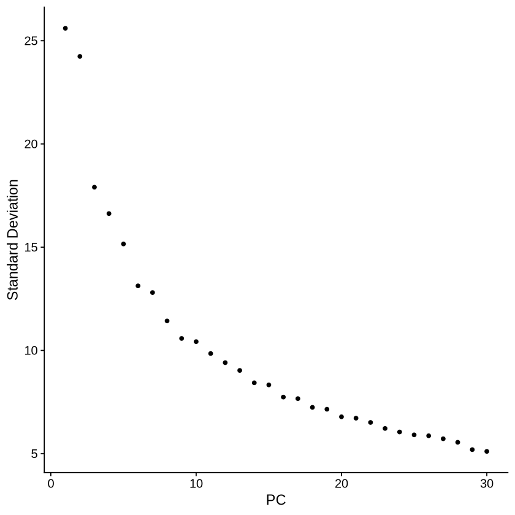
seurat.integrated <- FindNeighbors(object = seurat.integrated, dims = 1:20, k.param = 5)Computing nearest neighbor graph
Computing SNN
seurat.integrated <- RunUMAP(object = seurat.integrated, dims = 1:20)Warning message:
“The default method for RunUMAP has changed from calling Python UMAP via reticulate to the R-native UWOT using the cosine metric
To use Python UMAP via reticulate, set umap.method to 'umap-learn' and metric to 'correlation'
This message will be shown once per session”
10:31:42 UMAP embedding parameters a = 0.9922 b = 1.112
Found more than one class "dist" in cache; using the first, from namespace 'spam'
Also defined by ‘BiocGenerics’
10:31:42 Read 17721 rows and found 20 numeric columns
10:31:42 Using Annoy for neighbor search, n_neighbors = 30
Found more than one class "dist" in cache; using the first, from namespace 'spam'
Also defined by ‘BiocGenerics’
10:31:42 Building Annoy index with metric = cosine, n_trees = 50
0% 10 20 30 40 50 60 70 80 90 100%
[----|----|----|----|----|----|----|----|----|----|
*
*
*
*
*
*
*
*
*
*
*
*
*
*
*
*
*
*
*
*
*
*
*
*
*
*
*
*
*
*
*
*
*
*
*
*
*
*
*
*
*
*
*
*
*
*
*
*
*
*
|
10:31:44 Writing NN index file to temp file /tmp/Rtmp4PPgeq/file580bd59165
10:31:44 Searching Annoy index using 8 threads, search_k = 3000
10:31:45 Annoy recall = 100%
10:31:47 Commencing smooth kNN distance calibration using 8 threads
with target n_neighbors = 30
10:31:49 Initializing from normalized Laplacian + noise (using irlba)
10:31:57 Commencing optimization for 200 epochs, with 723462 positive edges
10:32:06 Optimization finished
seurat.integrated <- SetIdent(seurat.integrated, value = "orig.ident")options(repr.plot.width=10, repr.plot.height=8)
DimPlot(object = seurat.integrated, reduction = "umap", label = T, repel = TRUE, pt.size = 0.5)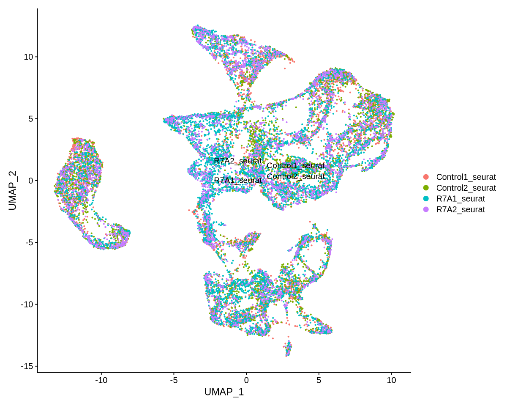
We save our integrated data
SaveH5Seurat(object = seurat.integrated, filename = "seurat.integrated.h5Seurat", overwrite=TRUE)Warning message:
“Overwriting previous file seurat.integrated.h5Seurat”
Creating h5Seurat file for version 3.1.5.9900
Adding counts for SCT
Adding data for SCT
Adding scale.data for SCT
No variable features found for SCT
No feature-level metadata found for SCT
Writing out SCTModel.list for SCT
Adding counts for RNA
Adding data for RNA
No variable features found for RNA
No feature-level metadata found for RNA
Adding data for integrated
Adding scale.data for integrated
Adding variable features for integrated
No feature-level metadata found for integrated
Writing out SCTModel.list for integrated
Adding cell embeddings for pca
Adding loadings for pca
No projected loadings for pca
Adding standard deviations for pca
No JackStraw data for pca
Adding cell embeddings for umap
No loadings for umap
No projected loadings for umap
No standard deviations for umap
No JackStraw data for umap
3.1 Clustering and cell type assignment
We perform clustering on the data using the leiden algorithm (blondel_fast_2008, Traag, Waltman, and Van Eck (2019)). Then, we look at a typical strategy of naming clusters by visualizing known markers. Since this is very subjective and biased, we then resort to naming cell types using a reference annotated dataset. An overview of cell type assignment procedures can be found at Cheng et al. (2023).
seurat.integrated <- LoadH5Seurat("seurat.integrated.h5Seurat", verbose=FALSE)Validating h5Seurat file
Warning message:
“Adding a command log without an assay associated with it”Clustering function FindClusters. The resolution is used to change the number of clusters. We do not need many, so we set on to 0.25. Usual values range between 0.1 and 1.
seurat.integrated <- FindClusters(object = seurat.integrated, resolution = .25)Modularity Optimizer version 1.3.0 by Ludo Waltman and Nees Jan van Eck
Number of nodes: 17721
Number of edges: 165857
Running Louvain algorithm...
Maximum modularity in 10 random starts: 0.9631
Number of communities: 21
Elapsed time: 0 secondsWarning message:
“UNRELIABLE VALUE: One of the ‘future.apply’ iterations (‘future_lapply-1’) unexpectedly generated random numbers without declaring so. There is a risk that those random numbers are not statistically sound and the overall results might be invalid. To fix this, specify 'future.seed=TRUE'. This ensures that proper, parallel-safe random numbers are produced via the L'Ecuyer-CMRG method. To disable this check, use 'future.seed = NULL', or set option 'future.rng.onMisuse' to "ignore".”The clusters are saved in the meta data table as integrated_snn_res.0.25. Note that the name changes with the resolution. Also observe how much metadata we have: many columns come from tools we have applied, such as doubletfinder (DF) and nearest neighbor distances (snn).
head( seurat.integrated@meta.data )| nCount_RNA | nFeature_RNA | nCount_SCT | nFeature_SCT | orig.ident | Condition | percent.mt | percent.chloroplast | pANN_0.25_0.09_609 | DF.classifications_0.25_0.09_609 | pANN_0.25_0.09_329 | DF.classifications_0.25_0.09_329 | pANN_0.25_0.09_309 | DF.classifications_0.25_0.09_309 | pANN_0.25_0.09_110 | DF.classifications_0.25_0.09_110 | integrated_snn_res.0.25 | seurat_clusters | |
|---|---|---|---|---|---|---|---|---|---|---|---|---|---|---|---|---|---|---|
| <dbl> | <int> | <dbl> | <int> | <chr> | <chr> | <dbl> | <dbl> | <dbl> | <chr> | <dbl> | <chr> | <dbl> | <chr> | <dbl> | <chr> | <fct> | <fct> | |
| AAACCCACATGATCTG-1_1 | 20942 | 4711 | 11291 | 4192 | Control1_seurat | Control | 0.4775093 | 0.12415242 | 0.2299688 | Singlet | NA | NA | NA | NA | NA | NA | 4 | 4 |
| AAACCCAGTAGCTTGT-1_1 | 29105 | 5157 | 10486 | 3382 | Control1_seurat | Control | 0.2954819 | 0.05497337 | 0.2695109 | Singlet | NA | NA | NA | NA | NA | NA | 9 | 9 |
| AAACCCAGTCTCTCAC-1_1 | 6115 | 2124 | 10086 | 2163 | Control1_seurat | Control | 1.6026165 | 0.01635323 | 0.1904266 | Singlet | NA | NA | NA | NA | NA | NA | 0 | 0 |
| AAACCCATCACCTTGC-1_1 | 7410 | 2988 | 10003 | 2985 | Control1_seurat | Control | 0.5263158 | 0.09446694 | 0.2466181 | Singlet | NA | NA | NA | NA | NA | NA | 16 | 16 |
| AAACGAAAGTCCTGTA-1_1 | 5616 | 2034 | 9866 | 2097 | Control1_seurat | Control | 0.7122507 | 0.10683761 | 0.2382934 | Singlet | NA | NA | NA | NA | NA | NA | 17 | 17 |
| AAACGAAAGTGTGTTC-1_1 | 12580 | 3329 | 11180 | 3328 | Control1_seurat | Control | 0.1510334 | 0.06359300 | 0.2559834 | Singlet | NA | NA | NA | NA | NA | NA | 2 | 2 |
We can plot the clusters in the UMAP plot
options(repr.plot.width=10, repr.plot.height=8)
DimPlot(object = seurat.integrated, reduction = "umap", label = T, repel = TRUE, pt.size = 0.5)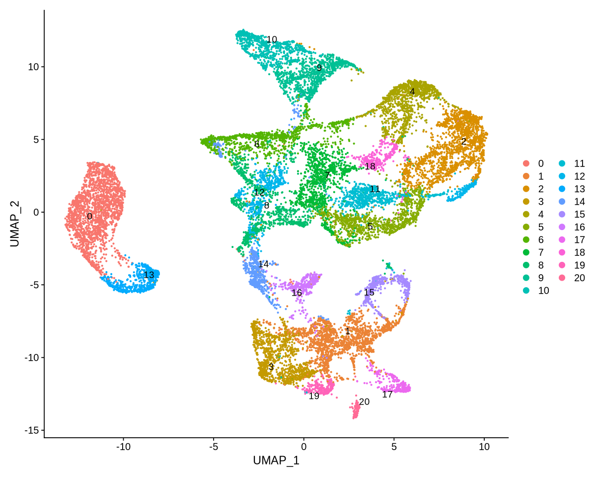
3.1.1 Cluster assignment from visualized marker scores
Here, we look at how to assign names based on known markers. In this procedure, biological knowledge of the cell types is needed. Below, there is a list of known markers for each cell type, extracted from the supplementary data of Frank et al. (2023).
features_list <- list(
'Cortex_scoring' = c("LotjaGi1g1v0006200",
"LotjaGi1g1v0022100",
"LotjaGi1g1v0261700",
"LotjaGi1g1v0348000",
"LotjaGi2g1v0303000",
"LotjaGi3g1v0505900"),
'Epidermis_scoring' = c("LotjaGi1g1v0080000",
"LotjaGi1g1v0377600",
"LotjaGi1g1v0613100",
"LotjaGi3g1v0070500"),
'Endodermis_scoring' = c("LotjaGi1g1v0114400",
"LotjaGi1g1v0221300",
"LotjaGi1g1v0240900-LC",
"LotjaGi1g1v0707500"),
'RootCap_scoring' = c("LotjaGi1g1v0020900",
"LotjaGi1g1v0039700-LC",
"LotjaGi1g1v0040300",
"LotjaGi1g1v0147500"),
'Meristem_scoring'= c("LotjaGi4g1v0300900",
"LotjaGi6g1v0056500",
"LotjaGi1g1v0594200"),
'Phloem_scoring'= c("LotjaGi1g1v0028800",
"LotjaGi1g1v0085900",
"LotjaGi1g1v0119300",
"LotjaGi1g1v0149100"),
'QuiescentCenter_scoring' = c("LotjaGi1g1v0004300",
"LotjaGi1g1v0021400",
"LotjaGi1g1v0052700",
"LotjaGi1g1v0084000"),
'RootHair_scoring'= c("LotjaGi1g1v0014300",
"LotjaGi1g1v0109000",
"LotjaGi1g1v0109100",
"LLotjaGi1g1v0143900"),
'Pericycle_scoring'= c("LotjaGi3g1v0222100",
"LotjaGi3g1v0395900-LC",
"LotjaGi5g1v0166000-LC",
"LotjaGi3g1v0395500-LC",
"LotjaGi1g1v0783700-LC",
"LotjaGi2g1v0333200",
"LotjaGi4g1v0293000-LC"),
'Stele_scoring' = c("LotjaGi2g1v0126700",
"LotjaGi1g1v0558200",
"LotjaGi4g1v0215500",
"LotjaGi3g1v0174100",
"LotjaGi5g1v0288600",
"LotjaGi3g1v0129700"),
'Xylem_scoring' = c("LotjaGi1g1v0623100",
"LotjaGi1g1v0569300",
"LotjaGi1g1v0443000",
"LotjaGi1g1v0428800")
)Here, we need a function calculating the scores for each cell type. This is the average expression of the markers in the list, from which we remove the average expression of some control genes, which are supposed not to be specific for the cell type of interest. The cells matching the desired type should retain a high score.
seurat.clustered <- AddModuleScore(
object = seurat.integrated,
features = features_list,
ctrl = 5,
name = 'LJ_scores'
)Warning message:
“The following features are not present in the object: LLotjaGi1g1v0143900, not searching for symbol synonyms”We also apply a function (from script.R) to rename the scores in the metadata. Their names are not intuitive by default, they are all called with the name chosen above and a number after it:
names(seurat.clustered@meta.data)- 'nCount_RNA'
- 'nFeature_RNA'
- 'nCount_SCT'
- 'nFeature_SCT'
- 'orig.ident'
- 'Condition'
- 'percent.mt'
- 'percent.chloroplast'
- 'pANN_0.25_0.09_609'
- 'DF.classifications_0.25_0.09_609'
- 'pANN_0.25_0.09_329'
- 'DF.classifications_0.25_0.09_329'
- 'pANN_0.25_0.09_309'
- 'DF.classifications_0.25_0.09_309'
- 'pANN_0.25_0.09_110'
- 'DF.classifications_0.25_0.09_110'
- 'integrated_snn_res.0.25'
- 'seurat_clusters'
- 'LJ_scores1'
- 'LJ_scores2'
- 'LJ_scores3'
- 'LJ_scores4'
- 'LJ_scores5'
- 'LJ_scores6'
- 'LJ_scores7'
- 'LJ_scores8'
- 'LJ_scores9'
- 'LJ_scores10'
- 'LJ_scores11'
seurat.clustered <- renameScores(markers_list = features_list, seurat_data = seurat.clustered) Scores renamed FROM
TO
LJ_scores1
LJ_scores2
LJ_scores3
LJ_scores4
LJ_scores5
LJ_scores6
LJ_scores7
LJ_scores8
LJ_scores9
LJ_scores10
LJ_scores11
Cortex_scoring
Epidermis_scoring
Endodermis_scoring
RootCap_scoring
Meristem_scoring
Phloem_scoring
QuiescentCenter_scoring
RootHair_scoring
Pericycle_scoring
Stele_scoring
Xylem_scoringNow we run the function plotScoresUMAP (from the file script.R). In Figure 22 we can see that some clusters are easy to classify (phloem and xylem), but many others are not. This is mainly due to the fact that the change of many cell types is a continuum, and this manual annotation is very subjective.
plotScoresUMAP(markers_list = features_list, seurat_data = seurat.clustered) 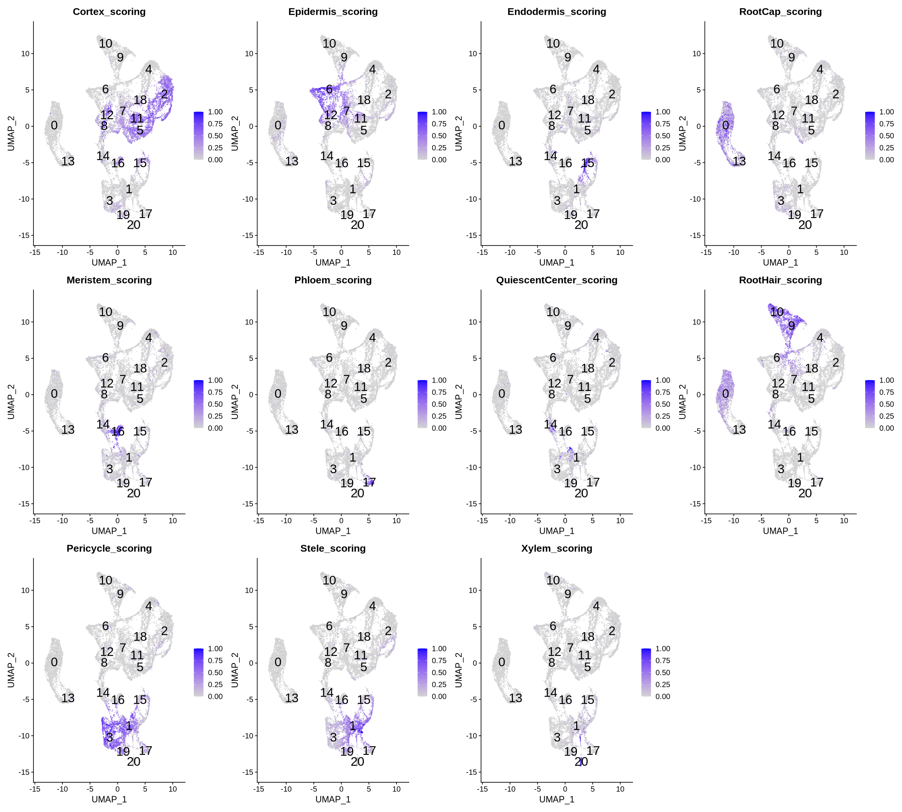
Just for the sake of the exercise, we set some names to the clusters below, at least for those ones that are well identifiable. Note that we use idents to define which is the clustering to be considered in use in the data.
Idents(seurat.clustered) <- 'integrated_snn_res.0.25'
seurat.clustered <- RenameIdents(object = seurat.clustered,
"2"="Cortex", "5"="Cortex", "11"="Cortex",
"6"="Epidermis", "12"="Epidermis", "7"="Epidermis",
"15"="Endodermis",
"0"="Root_Cap", "13"="Root_Cap",
"16"="Meristem",
"17"="Phloem",
"10"="Root_Hair", "9"="Root_Hair",
"1"="PericycleStele",
"3"="Pericycle", "19"="Pericycle",
"20"="Xylem")we saved the renamed clusters in the metadata under Cell_types
seurat.clustered@meta.data$Cell_types <- Idents(seurat.clustered)It seems from Figure 23 that we named most clusters. For some others we could not really be sure of the markers, and we will use the reference-based assignment.
options(repr.plot.width=10, repr.plot.height=10)
DimPlot(object = seurat.clustered, reduction = "umap", repel = TRUE, label=T, pt.size = 2, label.size = 5)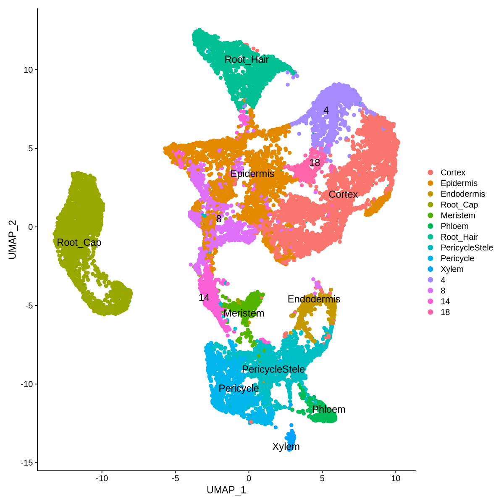
3.1.1.1 Optional: assigning a mixed cluster
The cluster Pericycle_Stele is probably a mix of the Pericycle and Stele, because it shows markers from both. We can assign at each cell of the cluster one of the cell types based on which marker score is highest. First we save the old clustering in the metadata to avoid losing it
seurat.clustered@meta.data$Cell_types_old <- Idents(seurat.clustered)and then reassign the name to the cluster Pericycle_Stele checking the markers score of each cell.
peri <- seurat.clustered@meta.data$Pericycle_scoring[seurat.clustered@meta.data$Cell_types == 'PericycleStele']
stel <- seurat.clustered@meta.data$Stele_scoring[seurat.clustered@meta.data$Cell_types == 'PericycleStele']
peri_stele <- peri>=stel
finalcl = c()
for(i in peri_stele)
finalcl = c(finalcl, ifelse(i, "Pericycle", "Stele"))
celltypes <- unfactor(seurat.clustered@meta.data$Cell_types)
celltypes[seurat.clustered@meta.data$Cell_types == 'PericycleStele'] <- finalcl
seurat.clustered@meta.data$Cell_types <- celltypes
Idents(seurat.clustered) <- seurat.clustered@meta.data$Cell_typesWe managed to get a meaningful separation between the two clusters!
options(repr.plot.width=10, repr.plot.height=10)
DimPlot(object = seurat.clustered, reduction = "umap", repel = TRUE, label=T, pt.size = 2, label.size = 5)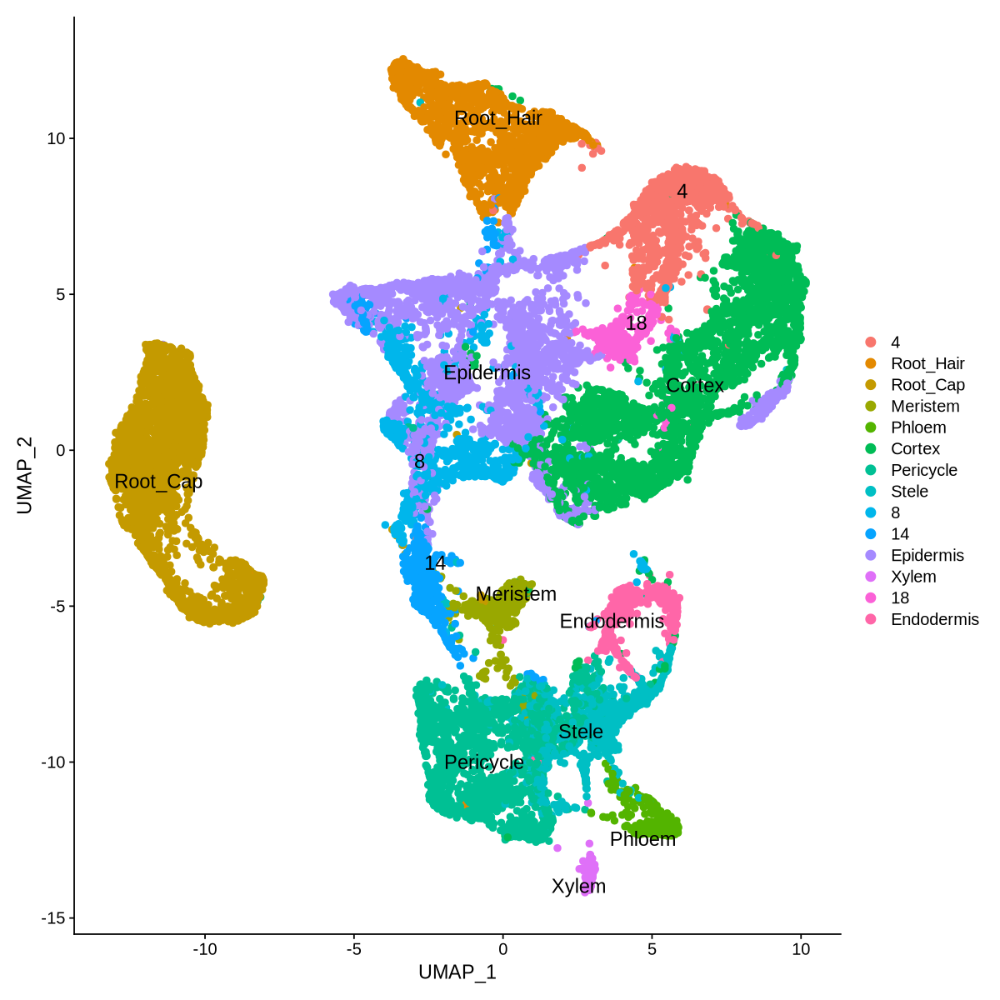
3.1.2 Cluster assignment from an annotated dataset
We now use the annotated data from Frank et al. (2023) (which is the same we are using in the tutorial) to transfer data labels to our own processed data. More about label transfer can be read at Stuart et al. (2019). We load the data from the paper and define reference and query data.
seurat.reference <- readRDS("data_lavinia.RDS")seurat.query <- seurat.clusteredWe have to define the data integration between query and reference before we can transfer the cluster names. For the algorithm to work, we need to use the “RNA” assay, which contains raw expression values.
DefaultAssay(seurat.query) <- "RNA"lotusjaponicus.anchors <- FindTransferAnchors(reference = seurat.reference,
features = intersect( rownames(seurat.query),
rownames( seurat.reference[['SCT']]@scale.data ) ),
query = seurat.query, dims = 1:20,
reference.reduction = "pca",
reference.assay='RNA')Projecting cell embeddings
Finding neighborhoods
Finding anchors
Found 25859 anchors
Filtering anchors
Retained 13194 anchors
Calculating the integration of the labels from the reference takes time. So we save the calculated anchors for the integration. If you need to rerun the code, skip the command above and instead load the data with readRDS below.
saveRDS(lotusjaponicus.anchors, file = "anchors.RDS")lotusjaponicus.anchors <- readRDS("anchors.RDS")Now it is finally time to transfer the labels and add them to the metadata. The column in the metadata is called by default predicted.id.
predictions <- TransferData(anchorset = lotusjaponicus.anchors,
refdata = Idents(seurat.reference),
dims = 1:20)Finding integration vectors
Finding integration vector weights
Predicting cell labels
seurat.clustered <- AddMetaData(seurat.clustered, metadata = predictions['predicted.id'])Just as a reminder of what is in the metadata, we can quickly look at the column names. Those are ordered by when we added things along the analysis. If you read the names, you can recognize part of the analysis steps until now.
names( seurat.clustered@meta.data )- 'nCount_RNA'
- 'nFeature_RNA'
- 'nCount_SCT'
- 'nFeature_SCT'
- 'orig.ident'
- 'Condition'
- 'percent.mt'
- 'percent.chloroplast'
- 'pANN_0.25_0.09_609'
- 'DF.classifications_0.25_0.09_609'
- 'pANN_0.25_0.09_329'
- 'DF.classifications_0.25_0.09_329'
- 'pANN_0.25_0.09_309'
- 'DF.classifications_0.25_0.09_309'
- 'pANN_0.25_0.09_110'
- 'DF.classifications_0.25_0.09_110'
- 'integrated_snn_res.0.25'
- 'seurat_clusters'
- 'Cortex_scoring'
- 'Epidermis_scoring'
- 'Endodermis_scoring'
- 'RootCap_scoring'
- 'Meristem_scoring'
- 'Phloem_scoring'
- 'QuiescentCenter_scoring'
- 'RootHair_scoring'
- 'Pericycle_scoring'
- 'Stele_scoring'
- 'Xylem_scoring'
- 'Cell_types'
- 'Cell_types_old'
- 'predicted.id'
Here we define as clustering for the data and the plots, the one transfered just before. We then have a look at Figure 25 to observe that the labels look fine.
Idents(seurat.clustered) <- 'predicted.id'options(repr.plot.width=10, repr.plot.height=10)
DimPlot(object = seurat.clustered,
reduction = "umap",
repel = TRUE, label=T,
pt.size = 0.5, label.size = 10, )ERROR: Error in DimPlot(object = seurat.clustered, reduction = "umap", repel = TRUE, : could not find function "DimPlot"We save the data
SaveH5Seurat(object = seurat.clustered,
filename = "seurat.clustered.h5Seurat",
overwrite = TRUE,
verbose=FALSE)Warning message:
“Overwriting previous file seurat.clustered.h5Seurat”
Creating h5Seurat file for version 3.1.5.9900
4 Gene Expression Analysis
In this section we explore the gene expression through
- inferring conserved genes across all treatments in the integrated dataset. Conserved genes are the ones preserving their expression across the grouping of interest.
- determining differentially expressed genes for the infected condition against the control. Differentially expressed genes are significantly more epressed in one of the two groups used for the comparison. Usually the wild type is used as query for the comparison, such that differentially expressed genes are referred to the perturbated condition (infection, knock-out, illness, …)
- studying coexpression modules (a module is a group of gene similarly expressed across cells in the data) to find if
- any of them contains the gene of interest,
- they are significantly more expressed in specific cell groups (Differential module expression)
- if there are specific known functions associated to some modules
We will also use gene ontology terms for understanding the function of groups of genes.
4.1 Conserved markers
We detect conserved markers across control and infected datasets. Below, we define a function that detect the conserved markers for each cell type, and calculates the average log-fold change of each conserved gene. The log-fold change is the magnitude of change of the gene expression in the cluster of interest against the rest of the data. This means that a marker with a high log-fold change and a significant p-value is also differentially expressed in a specific cluster across the two conditions.
seurat.clustered <- LoadH5Seurat("seurat.clustered.h5Seurat", verbose=FALSE)Validating h5Seurat file
Warning message:
“Adding a command log without an assay associated with it”get_conserved <- function(cluster){
message(paste0("Conserved genes in ",cluster), appendLF=FALSE)
FindConservedMarkers(seurat.clustered,
ident.1 = cluster,
grouping.var = "Condition",
only.pos = TRUE,
verbose=FALSE) %>%
rownames_to_column(var = "gene") %>%
cbind(cluster_id = cluster, .)
}
clusters <- levels(seurat.clustered@active.ident)
conserved_markers <- map_dfr(c(clusters), get_conserved)
conserved_markers$Average_log2FC <- (conserved_markers$Control_avg_log2FC + conserved_markers$R7A_avg_log2FC) /2
conserved_markers$Max_p_val_adj <- apply(conserved_markers[, c('Control_p_val_adj', 'R7A_p_val_adj')], 1, max)Conserved genes in Cortex
Conserved genes in Trichoblasts
Conserved genes in Root tip
Conserved genes in Meristem
Conserved genes in Phloem
Conserved genes in Pericycle
Conserved genes in Stele
Conserved genes in Atrichoblasts
Conserved genes in Xylem
Conserved genes in Endodermis
Conserved genes in Quiescent centerWe can save conserved markers in a csv file. It can be downloaded and opened like a normal excel table to consult it, for example when writing an article or a report.
write.csv(conserved_markers, "conserved_markers.csv")You can load the table in R with read.csv
conserved_markers <- read.csv("conserved_markers.csv")The table contains, for each cluster, the genes that are conserved, the cluster they refer to, the mean log-fold change of the gene compared to the rest of the data, and the maximum p-value (adjusted). There are many other values, which are not of interest for interpreting results:
head(conserved_markers)| X | cluster_id | gene | Control_p_val | Control_avg_log2FC | Control_pct.1 | Control_pct.2 | Control_p_val_adj | R7A_p_val | R7A_avg_log2FC | R7A_pct.1 | R7A_pct.2 | R7A_p_val_adj | max_pval | minimump_p_val | Average_log2FC | Max_p_val_adj | |
|---|---|---|---|---|---|---|---|---|---|---|---|---|---|---|---|---|---|
| <int> | <chr> | <chr> | <dbl> | <dbl> | <dbl> | <dbl> | <dbl> | <dbl> | <dbl> | <dbl> | <dbl> | <dbl> | <dbl> | <dbl> | <dbl> | <dbl> | |
| 1 | 1 | Cortex | LotjaGi1g1v0022100 | 0 | 2.582282 | 0.660 | 0.186 | 0 | 0.000000e+00 | 1.8856866 | 0.491 | 0.075 | 0.000000e+00 | 0.000000e+00 | 0 | 2.2339844 | 0.000000e+00 |
| 2 | 2 | Cortex | LotjaGi1g1v0515200 | 0 | 1.753093 | 0.645 | 0.210 | 0 | 6.249720e-286 | 1.2901353 | 0.529 | 0.202 | 1.525432e-281 | 6.249720e-286 | 0 | 1.5216140 | 1.525432e-281 |
| 3 | 3 | Cortex | LotjaGi1g1v0588600 | 0 | 1.198638 | 0.858 | 0.452 | 0 | 6.464085e-163 | 0.4549910 | 0.572 | 0.284 | 1.577754e-158 | 6.464085e-163 | 0 | 0.8268144 | 1.577754e-158 |
| 4 | 4 | Cortex | LotjaGi3g1v0197600 | 0 | 1.892316 | 0.849 | 0.526 | 0 | 3.404934e-121 | 0.5013604 | 0.490 | 0.267 | 8.310762e-117 | 3.404934e-121 | 0 | 1.1968384 | 8.310762e-117 |
| 5 | 5 | Cortex | LotjaGi3g1v0443150 | 0 | 1.081837 | 0.446 | 0.082 | 0 | 9.312590e-201 | 0.3994195 | 0.205 | 0.021 | 2.273017e-196 | 9.312590e-201 | 0 | 0.7406281 | 2.273017e-196 |
| 6 | 6 | Cortex | LotjaGi3g1v0505900 | 0 | 2.974151 | 0.591 | 0.168 | 0 | 0.000000e+00 | 2.0901535 | 0.451 | 0.078 | 0.000000e+00 | 0.000000e+00 | 0 | 2.5321521 | 0.000000e+00 |
We can easily look at the interesting columns:
head( conserved_markers[,c('cluster_id', 'gene', 'Average_log2FC', 'Max_p_val_adj')] )| cluster_id | gene | Average_log2FC | Max_p_val_adj | |
|---|---|---|---|---|
| <chr> | <chr> | <dbl> | <dbl> | |
| 1 | Cortex | LotjaGi1g1v0022100 | 2.2339844 | 0.000000e+00 |
| 2 | Cortex | LotjaGi1g1v0515200 | 1.5216140 | 1.525432e-281 |
| 3 | Cortex | LotjaGi1g1v0588600 | 0.8268144 | 1.577754e-158 |
| 4 | Cortex | LotjaGi3g1v0197600 | 1.1968384 | 8.310762e-117 |
| 5 | Cortex | LotjaGi3g1v0443150 | 0.7406281 | 2.273017e-196 |
| 6 | Cortex | LotjaGi3g1v0505900 | 2.5321521 | 0.000000e+00 |
So many of those columns are not significant in term of differential gene expression! This means that their expression is conserved across conditions, but they are not specific to any cluster. Rather, they are found with the same expression everywhere. It is definitely more interesting to look at the genes that are specific of some clusters. We define the table with only our columns of interest, and then we filter the non-significant genes. Also, we can filter by requiring that the log fold-change is above 1.5, so that we do not have too many genes to look at in each cluster. Remember we are using logarithms, so it means the expression is larger by a factor 2.83 (2 elevated at the power of 1.5).
conserved_filtered <- conserved_markers %>%
select(cluster_id, gene, Average_log2FC, Max_p_val_adj) %>%
filter(Max_p_val_adj < .001 & Average_log2FC>1.5 )conserved_filtered| cluster_id | gene | Average_log2FC | Max_p_val_adj |
|---|---|---|---|
| <chr> | <chr> | <dbl> | <dbl> |
| Cortex | LotjaGi1g1v0022100 | 2.233984 | 0.000000e+00 |
| Cortex | LotjaGi1g1v0515200 | 1.521614 | 1.525432e-281 |
| Cortex | LotjaGi3g1v0505900 | 2.532152 | 0.000000e+00 |
| Cortex | LotjaGi4g1v0207600 | 1.838904 | 0.000000e+00 |
| Cortex | LotjaGi4g1v0208100 | 1.776188 | 0.000000e+00 |
| Cortex | LotjaGi4g1v0275500 | 1.839618 | 2.666024e-222 |
| Cortex | LotjaGi5g1v0269800-LC | 1.683960 | 2.442392e-295 |
| Cortex | LotjaGi6g1v0028000-LC | 1.655783 | 0.000000e+00 |
| Cortex | LotjaGi6g1v0254700 | 2.159140 | 2.875239e-294 |
| Cortex | LotjaGi2g1v0303000 | 1.988727 | 8.690812e-221 |
| Cortex | LotjaGi6g1v0253800 | 2.043040 | 3.914669e-180 |
| Cortex | LotjaGi3g1v0445300 | 1.869792 | 3.947225e-113 |
| Cortex | LotjaGi2g1v0157900 | 1.589630 | 1.770177e-211 |
| Cortex | LotjaGi1g1v0594900 | 2.092269 | 6.093304e-176 |
| Trichoblasts | LotjaGi1g1v0074900 | 3.964291 | 0.000000e+00 |
| Trichoblasts | LotjaGi1g1v0109000 | 3.138703 | 0.000000e+00 |
| Trichoblasts | LotjaGi1g1v0171200-LC | 1.837657 | 0.000000e+00 |
| Trichoblasts | LotjaGi1g1v0268900 | 2.002680 | 0.000000e+00 |
| Trichoblasts | LotjaGi1g1v0405300 | 3.843570 | 0.000000e+00 |
| Trichoblasts | LotjaGi1g1v0413800 | 1.857181 | 0.000000e+00 |
| Trichoblasts | LotjaGi1g1v0430800-LC | 2.066899 | 0.000000e+00 |
| Trichoblasts | LotjaGi1g1v0593900 | 1.844212 | 0.000000e+00 |
| Trichoblasts | LotjaGi1g1v0636900 | 2.000571 | 0.000000e+00 |
| Trichoblasts | LotjaGi1g1v0683300 | 3.703797 | 0.000000e+00 |
| Trichoblasts | LotjaGi2g1v0160200 | 4.878893 | 0.000000e+00 |
| Trichoblasts | LotjaGi2g1v0422000 | 2.102740 | 0.000000e+00 |
| Trichoblasts | LotjaGi2g1v0426500 | 2.252654 | 0.000000e+00 |
| Trichoblasts | LotjaGi3g1v0086100-LC | 2.609181 | 0.000000e+00 |
| Trichoblasts | LotjaGi3g1v0131300 | 2.006668 | 0.000000e+00 |
| Trichoblasts | LotjaGi3g1v0204100 | 2.347129 | 0.000000e+00 |
| ⋮ | ⋮ | ⋮ | ⋮ |
| Quiescent center | LotjaGi3g1v0121000 | 2.947723 | 2.922592e-27 |
| Quiescent center | LotjaGi1g1v0409900 | 3.073568 | 1.872145e-46 |
| Quiescent center | LotjaGi5g1v0173900 | 1.651361 | 8.663520e-23 |
| Quiescent center | LotjaGi1g1v0389100 | 1.656108 | 8.894005e-35 |
| Quiescent center | LotjaGi5g1v0070400 | 1.779483 | 3.029826e-62 |
| Quiescent center | LotjaGi5g1v0000600 | 2.562423 | 3.692719e-21 |
| Quiescent center | LotjaGi5g1v0324200 | 1.837806 | 1.547016e-34 |
| Quiescent center | LotjaGi1g1v0656500 | 2.788623 | 4.006635e-14 |
| Quiescent center | LotjaGi6g1v0330700 | 3.329053 | 1.939902e-29 |
| Quiescent center | LotjaGi3g1v0123200 | 2.347791 | 7.972779e-38 |
| Quiescent center | LotjaGi3g1v0094400 | 3.077065 | 1.609653e-41 |
| Quiescent center | LotjaGi3g1v0199700 | 1.784646 | 9.906537e-25 |
| Quiescent center | LotjaGi4g1v0413300-LC | 2.140779 | 7.802118e-36 |
| Quiescent center | LotjaGi4g1v0070600 | 1.797423 | 2.355649e-41 |
| Quiescent center | LotjaGi3g1v0255800 | 3.496842 | 2.199030e-12 |
| Quiescent center | LotjaGi6g1v0213700 | 1.949240 | 3.477861e-33 |
| Quiescent center | LotjaGi1g1v0512800 | 2.010809 | 2.086998e-21 |
| Quiescent center | LotjaGi6g1v0266650 | 3.216128 | 3.940921e-16 |
| Quiescent center | LotjaGi4g1v0336700 | 1.608371 | 5.043550e-17 |
| Quiescent center | LotjaGi3g1v0153700-LC | 2.145124 | 7.685686e-11 |
| Quiescent center | LotjaGi6g1v0224300 | 1.650663 | 4.753793e-04 |
| Quiescent center | LotjaGi2g1v0295300 | 1.650952 | 8.857559e-04 |
| Quiescent center | LotjaGi1g1v0558200 | 2.721567 | 6.316628e-09 |
| Quiescent center | LotjaGi1g1v0137100 | 1.726189 | 5.632273e-10 |
| Quiescent center | LotjaGi3g1v0437000 | 2.766490 | 7.153966e-12 |
| Quiescent center | LotjaGi2g1v0434500 | 2.513694 | 2.749486e-05 |
| Quiescent center | LotjaGi4g1v0081300-LC | 1.837138 | 7.581861e-04 |
| Quiescent center | LotjaGi3g1v0217800 | 2.591970 | 9.094169e-04 |
| Quiescent center | LotjaGi2g1v0371700 | 1.560628 | 7.675878e-13 |
| Quiescent center | LotjaGi6g1v0040400 | 1.738781 | 1.123715e-04 |
We can use our list in combination witht he gene ontology table, so that we can find out the relevant go-terms for each cluster and the genes we have found.
We open the gene ontology table
go_table <- read.table("./LJ_GO_terms.gaf", skip=6, sep='\t', fill=TRUE, quote = "\"")This contains genes and ontology descriptions that can be useful for identifying functions of conserved markers.
go_table$V2[1]
'protein kinase family protein; TAIR: AT5G19450.1 calcium-dependent protein kinase 19; Swiss-Prot: sp|Q84SL0|CDPKK_ORYSJ Calcium-dependent protein kinase 20; TrEMBL-Plants: tr|A0A151TU37|A0A151TU37_CAJCA Calcium-dependent protein kinase 32; Found in the gene: LotjaGi0g1v0000400'
head( go_table )| V1 | V2 | |
|---|---|---|
| <chr> | <chr> | |
| 1 | LotjaGi0g1v0000400.1 | protein kinase family protein; TAIR: AT5G19450.1 calcium-dependent protein kinase 19; Swiss-Prot: sp|Q84SL0|CDPKK_ORYSJ Calcium-dependent protein kinase 20; TrEMBL-Plants: tr|A0A151TU37|A0A151TU37_CAJCA Calcium-dependent protein kinase 32; Found in the gene: LotjaGi0g1v0000400 |
| 2 | LotjaGi0g1v0000400.1 | protein kinase family protein; TAIR: AT5G19450.1 calcium-dependent protein kinase 19; Swiss-Prot: sp|Q84SL0|CDPKK_ORYSJ Calcium-dependent protein kinase 20; TrEMBL-Plants: tr|A0A151TU37|A0A151TU37_CAJCA Calcium-dependent protein kinase 32; Found in the gene: LotjaGi0g1v0000400 |
| 3 | LotjaGi0g1v0000400.1 | protein kinase family protein; TAIR: AT5G19450.1 calcium-dependent protein kinase 19; Swiss-Prot: sp|Q84SL0|CDPKK_ORYSJ Calcium-dependent protein kinase 20; TrEMBL-Plants: tr|A0A151TU37|A0A151TU37_CAJCA Calcium-dependent protein kinase 32; Found in the gene: LotjaGi0g1v0000400 |
| 4 | LotjaGi0g1v0000400.1 | protein kinase family protein; TAIR: AT5G19450.1 calcium-dependent protein kinase 19; Swiss-Prot: sp|Q84SL0|CDPKK_ORYSJ Calcium-dependent protein kinase 20; TrEMBL-Plants: tr|A0A151TU37|A0A151TU37_CAJCA Calcium-dependent protein kinase 32; Found in the gene: LotjaGi0g1v0000400 |
| 5 | LotjaGi0g1v0000400.2 | protein kinase family protein; TAIR: AT3G57530.1 calcium-dependent protein kinase 32; Swiss-Prot: sp|Q84SL0|CDPKK_ORYSJ Calcium-dependent protein kinase 20; TrEMBL-Plants: tr|V7CVU7|V7CVU7_PHAVU Uncharacterized protein; Found in the gene: LotjaGi0g1v0000400 |
| 6 | LotjaGi0g1v0000400.2 | protein kinase family protein; TAIR: AT3G57530.1 calcium-dependent protein kinase 32; Swiss-Prot: sp|Q84SL0|CDPKK_ORYSJ Calcium-dependent protein kinase 20; TrEMBL-Plants: tr|V7CVU7|V7CVU7_PHAVU Uncharacterized protein; Found in the gene: LotjaGi0g1v0000400 |
The code below adds the GO terms to our filtered table of conserved markers. We parse from the go table the terms from the TAIR (arabidopsis protein archive) and the reviewed swiss-uniprotKB protein archive for plants for the arabidopsis thaliana. It can take some time to run, but is usually fast because we parallelized the function (here we assign GO terms to 16 genes at a time).
conserved_filtered <- addGOterms(input_table = conserved_filtered,
go_table = go_table,
n.cores = 16)You can choose any cluster and see its GO terms. We do not look at undefined GO terms.
conserved_filtered %>% filter(cluster_id=='Phloem' & GO!='Undefined')| cluster_id | gene | Average_log2FC | Max_p_val_adj | GO |
|---|---|---|---|---|
| <chr> | <chr> | <dbl> | <dbl> | <chr> |
| Phloem | LotjaGi1g1v0119300 | 2.272687 | 0.000000e+00 | Jacalin lectin family protein; TAIR: AT1G19715.1 Mannose-binding lectin superfamily protein; Swiss-Prot: sp |
| Phloem | LotjaGi1g1v0544200 | 3.228466 | 0.000000e+00 | Heavy-metal-associated domain-containing family protein; TAIR: AT5G17450.1 Heavy metal transport/detoxification superfamily protein; Swiss-Prot: sp |
| Phloem | LotjaGi1g1v0696900 | 1.811034 | 0.000000e+00 | Heavy metal transport/detoxification superfamily protein; TAIR: AT2G37390.2 Chloroplast-targeted copper chaperone protein; Swiss-Prot: sp |
| Phloem | LotjaGi1g1v0768600 | 2.683491 | 0.000000e+00 | Glutaredoxin family protein; TAIR: AT2G47880.1 Glutaredoxin family protein; Swiss-Prot: sp |
| Phloem | LotjaGi2g1v0102600 | 1.716500 | 0.000000e+00 | Tetraspanin family protein; TAIR: AT3G12090.1 tetraspanin6; Swiss-Prot: sp |
| Phloem | LotjaGi2g1v0309900 | 3.350798 | 0.000000e+00 | Thioredoxin; TAIR: AT5G39950.1 thioredoxin 2; Swiss-Prot: sp |
| Phloem | LotjaGi2g1v0310000 | 1.772175 | 0.000000e+00 | Thioredoxin; TAIR: AT5G39950.1 thioredoxin 2; Swiss-Prot: sp |
| Phloem | LotjaGi2g1v0400500 | 2.178100 | 0.000000e+00 | Calcium binding protein; TAIR: AT2G15680.1 Calcium-binding EF-hand family protein; Swiss-Prot: sp |
| Phloem | LotjaGi3g1v0089200 | 3.687731 | 0.000000e+00 | MLP-like protein; TAIR: AT5G28010.1 Polyketide cyclase/dehydrase and lipid transport superfamily protein; Swiss-Prot: sp |
| Phloem | LotjaGi3g1v0176800 | 1.563508 | 0.000000e+00 | Myb family transcription factor APL; TAIR: AT3G04030.3 Homeodomain-like superfamily protein; Swiss-Prot: sp |
| Phloem | LotjaGi4g1v0012200 | 1.799539 | 0.000000e+00 | Aspartic proteinase; TAIR: AT1G62290.1 Saposin-like aspartyl protease family protein; Swiss-Prot: sp |
| Phloem | LotjaGi4g1v0267000 | 2.120445 | 0.000000e+00 | GTP-binding nuclear protein; TAIR: AT5G20010.1 RAS-related nuclear protein-1; Swiss-Prot: sp |
| Phloem | LotjaGi5g1v0003000 | 1.588913 | 0.000000e+00 | Calcium-dependent kinase; TAIR: AT1G76040.2 calcium-dependent protein kinase 29; Swiss-Prot: sp |
| Phloem | LotjaGi5g1v0084800 | 2.180794 | 2.328492e-297 | Ras family protein; TAIR: AT5G03530.1 RAB GTPase homolog C2A; Swiss-Prot: sp |
| Phloem | LotjaGi5g1v0095500 | 1.741651 | 1.355926e-296 | Carbonic anhydrase family protein; TAIR: AT3G52720.1 alpha carbonic anhydrase 1; Swiss-Prot: sp |
| Phloem | LotjaGi2g1v0210200 | 1.943762 | 5.224239e-267 | Heavy metal-associated protein; TAIR: AT3G25855.1 Copper transport protein family; Swiss-Prot: sp |
| Phloem | LotjaGi2g1v0061300 | 3.624828 | 3.013300e-260 | MLP; TAIR: AT1G70890.1 MLP-like protein 43; Swiss-Prot: sp |
| Phloem | LotjaGi3g1v0532700 | 2.410816 | 1.369188e-219 | Aquaporin-like protein; TAIR: AT3G54820.1 plasma membrane intrinsic protein 2;5; Swiss-Prot: sp |
| Phloem | LotjaGi4g1v0164700 | 2.218920 | 4.924690e-205 | Spermidine synthase; TAIR: AT1G23820.1 spermidine synthase; Swiss-Prot: sp |
| Phloem | LotjaGi1g1v0028800 | 2.680094 | 1.462391e-188 | Translation factor SUI1; TAIR: AT5G54940.1 Translation initiation factor SUI1 family protein; Swiss-Prot: sp |
| Phloem | LotjaGi1g1v0560400 | 1.724744 | 1.920599e-182 | Peptidyl-prolyl cis-trans isomerase; TAIR: AT2G16600.1 rotamase CYP 3; Swiss-Prot: sp |
| Phloem | LotjaGi5g1v0073000 | 2.147869 | 2.585078e-180 | Copper transport protein family; TAIR: AT1G66240.1 homolog of anti-oxidant 1; Swiss-Prot: sp |
| Phloem | LotjaGi6g1v0289000 | 5.012208 | 2.064488e-166 | 1-aminocyclopropane-1-carboxylate oxidase; TAIR: AT1G05010.1 ethylene-forming enzyme; Swiss-Prot: sp |
| Phloem | LotjaGi3g1v0039400 | 1.740635 | 6.553991e-159 | Trehalose-6-phosphate synthase; TAIR: AT1G78580.1 trehalose-6-phosphate synthase; Swiss-Prot: sp |
| Phloem | LotjaGi1g1v0555000 | 3.082789 | 8.949235e-149 | Bidirectional sugar transporter SWEET; TAIR: AT5G13170.1 senescence-associated gene 29; Swiss-Prot: sp |
| Phloem | LotjaGi2g1v0386600 | 2.779973 | 1.485060e-293 | Peroxidase; TAIR: AT5G66390.1 Peroxidase superfamily protein; Swiss-Prot: sp |
| Phloem | LotjaGi1g1v0594300 | 2.821061 | 3.326878e-165 | dCTP pyrophosphatase 1; TAIR: AT3G25400.1 dCTP pyrophosphatase-like protein; Swiss-Prot: sp |
| Phloem | LotjaGi5g1v0184300 | 1.707773 | 1.469535e-76 | Ethylene-responsive transcription factor; TAIR: AT3G23230.1 Integrase-type DNA-binding superfamily protein; Swiss-Prot: sp |
| Phloem | LotjaGi3g1v0046500 | 2.641435 | 1.136575e-150 | Fatty acid oxidation complex subunit alpha; TAIR: AT3G15290.1 3-hydroxyacyl-CoA dehydrogenase family protein; Swiss-Prot: sp |
| Phloem | LotjaGi3g1v0237700 | 1.647226 | 1.425559e-108 | Early nodulin-like protein; TAIR: AT3G20570.1 early nodulin-like protein 9; Swiss-Prot: sp |
| Phloem | LotjaGi1g1v0393600 | 3.535070 | 8.655222e-170 | Plasma membrane ATPase; TAIR: AT2G24520.2 plasma membrane H+-ATPase; Swiss-Prot: sp Plasma membrane ATPase; TAIR: AT2G24520.1 plasma membrane H+-ATPase; Swiss-Prot: sp Plasma membrane ATPase; TAIR: AT2G18960.1 H -ATPase 1; Swiss-Prot: sp |
| Phloem | LotjaGi3g1v0149300 | 2.031048 | 2.521757e-55 | Early nodulin-like protein; TAIR: AT3G20570.1 early nodulin-like protein 9; Swiss-Prot: sp |
| Phloem | LotjaGi1g1v0172500 | 2.372215 | 1.119822e-43 | Glucosamine-6-phosphate deaminase; TAIR: AT5G24400.1 NagB/RpiA/CoA transferase-like superfamily protein; Swiss-Prot: sp |
| Phloem | LotjaGi3g1v0136900 | 1.535443 | 1.376879e-39 | Ubiquitin, putative; TAIR: AT1G31340.1 related to ubiquitin 1; Swiss-Prot: sp |
| Phloem | LotjaGi4g1v0369600 | 1.832673 | 4.931855e-74 | Xyloglucan endotransglucosylase/hydrolase; TAIR: AT3G23730.1 xyloglucan endotransglucosylase/hydrolase 16; Swiss-Prot: sp |
| Phloem | LotjaGi2g1v0082500 | 1.661449 | 8.995617e-48 | MYB-related transcription factor; TAIR: AT5G14340.1 myb domain protein 40; Swiss-Prot: sp Myb factor; TAIR: AT5G14340.1 myb domain protein 40; Swiss-Prot: sp |
| Phloem | LotjaGi1g1v0662000 | 1.515167 | 4.491462e-35 | protein kinase family protein; TAIR: AT3G56760.1 Protein kinase superfamily protein; Swiss-Prot: sp protein kinase family protein; TAIR: AT2G41140.1 CDPK-related kinase 1; Swiss-Prot: sp |
| Phloem | LotjaGi3g1v0522700 | 1.611578 | 6.711625e-26 | Cold shock protein; TAIR: AT2G21060.1 glycine-rich protein 2B; Swiss-Prot: sp |
| Phloem | LotjaGi2g1v0286300 | 2.146353 | 6.768979e-53 | S-adenosylmethionine decarboxylase proenzyme; TAIR: AT3G25570.1 Adenosylmethionine decarboxylase family protein; Swiss-Prot: sp |
| Phloem | LotjaGi3g1v0224500 | 3.186377 | 5.120955e-21 | Metallothionein-like protein; TAIR: AT3G09390.1 metallothionein 2A; Swiss-Prot: sp |
| Phloem | LotjaGi1g1v0386600 | 1.785015 | 5.317097e-34 | GTP-binding nuclear protein; TAIR: AT5G55190.1 RAN GTPase 3; Swiss-Prot: sp |
| Phloem | LotjaGi1g1v0386300 | 1.560275 | 2.666945e-24 | GTP-binding nuclear protein; TAIR: AT5G55190.1 RAN GTPase 3; Swiss-Prot: sp |
| Phloem | LotjaGi6g1v0220900 | 1.759788 | 4.299561e-22 | Sucrose synthase; TAIR: AT3G43190.1 sucrose synthase 4; Swiss-Prot: sp |
| Phloem | LotjaGi6g1v0234000 | 1.621734 | 4.539221e-13 | Calcium-transporting ATPase; TAIR: AT5G57110.1 autoinhibited Ca2+ -ATPase, isoform 8; Swiss-Prot: sp |
As a last check, we can see if the gene RINRK1 is in the table. The gene ID we need for RINCR1 is LotjaGi1g1v0732500. Since this gene should be expressed only within the infected samples, we expect not to find it in the table of conserved genes:
RINRK1.id <- 'LotjaGi1g1v0182900'conserved_filtered %>% filter(gene==RINRK1.id)| cluster_id | gene | Average_log2FC | Max_p_val_adj | GO |
|---|---|---|---|---|
| <chr> | <chr> | <dbl> | <dbl> | <chr> |
Again, we saved the filtered table of conserved genes with the GO terms, so it can be downloaded and used outside the programming environment.
write.csv(conserved_filtered, "conserved_GO.csv")4.2 Differential Gene Expression (DGE)
Here we test each cluster to see which are significantly more expressed genes in the infected samples compared to the wild-type samples. We also see if we find the gene RINRK1 as being significant. Again, the resulting genes can be useful to be integrated with the GO terms as we did before.
We first have a quick look to see how much the RINRK1 gene is expressed in the data. We use the RNA assay to plot the true expression values. The UMAP plot shows few cells expressing the genes, meaning its average expression is going to be very low, so it is likely we will not find the gene to be differentially expressed anywhere.
RINRK1.id <- 'LotjaGi1g1v0182900'
DefaultAssay(seurat.clustered) <- "RNA"
FeaturePlot(seurat.clustered,
reduction = "umap",
features = c(RINRK1.id),
order = TRUE,
min.cutoff = 0,
pt.size = 1,
label = TRUE,
label.size = 7) + theme(legend.position = "right")
From biological knowledge, we expect the gene mostly expressed in the cortex and trichoblasts upon inoculation with rhizobia, and that is what happens in our data as well. We can see it in the code and violin plot of Figure 27
cat("Cells in inoculated L.J. expressing", RINRK1.id, "\n")
cat( sum( as.numeric(GetAssayData(seurat.clustered[RINRK1.id,]))>0 &
seurat.clustered@meta.data$Condition=="R7A" ) )
cat("\nCells in control L.J. expressing", RINRK1.id, "\n")
cat( sum( as.numeric(GetAssayData(seurat.clustered[RINRK1.id,]))>0 &
seurat.clustered@meta.data$Condition=="Control" ) )Cells in inoculated L.J. expressing LotjaGi1g1v0182900
32
Cells in control L.J. expressing LotjaGi1g1v0182900
0VlnPlot(seurat.clustered,
features = RINRK1.id)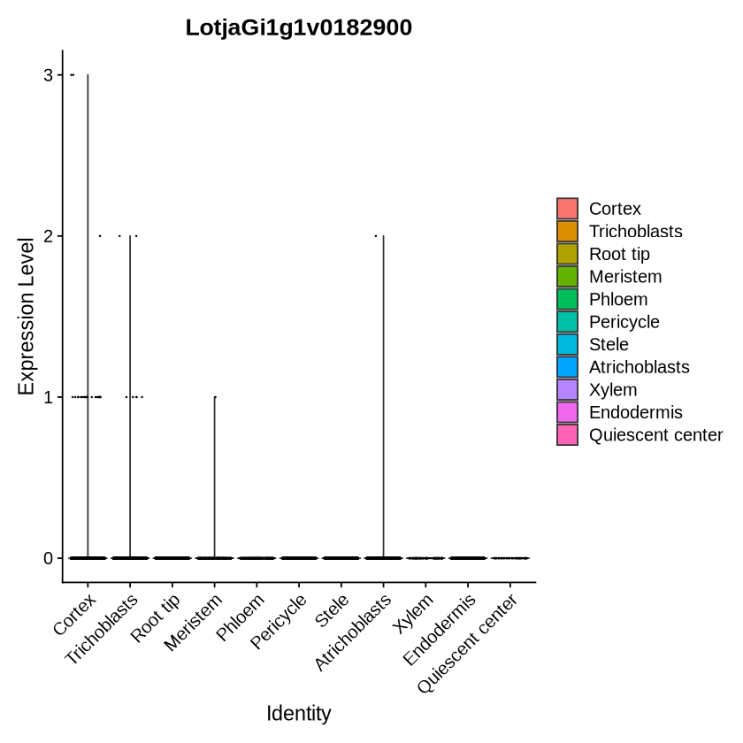
The code below uses FindMarkers to compare R7A condition against Control for each cluster, with a filter to remove non-singnificant genes (keeping p-value below 0.001 and log fold change > 1 and < -1). We keep also genes expressed 30% more than in the condition where they are underexpressed. We use only the 2000 most variable genes, since we are interested in very variable gene expressions across data.
seurat.clustered <- FindVariableFeatures(seurat.clustered, nfeatures = 2000, assay = "integrated")Warning message:
“Not all features provided are in this Assay object, removing the following feature(s): LotjaGi3g1v0268500, LotjaGi2g1v0180800, LotjaGi1g1v0192300, LotjaGi4g1v0383900, LotjaGi2g1v0178000, LotjaGi1g1v0748200, LotjaGi6g1v0166900-LC, LotjaGi6g1v0053200, LotjaGi2g1v0240800, LotjaGi1g1v0614900, LotjaGi1g1v0766800, LotjaGi1g1v0157700, LotjaGi2g1v0095600, LotjaGi1g1v0645700, LotjaGi1g1v0324300, LotjaGi5g1v0336700, LotjaGi6g1v0349200, LotjaGi3g1v0100600, LotjaGi1g1v0174500, LotjaGi2g1v0347900, LotjaGi2g1v0130600-LC, LotjaGi6g1v0167000-LC, LotjaGi3g1v0100400, LotjaGi3g1v0487600, LotjaGi1g1v0766200, LotjaGi5g1v0186200, LotjaGi3g1v0274700, LotjaGi2g1v0228100, LotjaGi1g1v0544500, LotjaGi5g1v0019000, LotjaGi3g1v0205900-LC, LotjaGi3g1v0150400, LotjaGi2g1v0000800, LotjaGi2g1v0177400, LotjaGi5g1v0178500, LotjaGi2g1v0005400, LotjaGi1g1v0667100, LotjaGi2g1v0435800, LotjaGi1g1v0320800, LotjaGi3g1v0222000, LotjaGi4g1v0392000, LotjaGi3g1v0114700, LotjaGi2g1v0143500, LotjaGi5g1v0013400, LotjaGi4g1v0452900, LotjaGi3g1v0468000, LotjaGi4g1v0193600-LC, LotjaGi4g1v0299200, LotjaGi4g1v0114900-LC, LotjaGi3g1v0178100, LotjaGi3g1v0050100, LotjaGi2g1v0176600, LotjaGi2g1v0183200, LotjaGi2g1v0081400, LotjaGi6g1v0271600, LotjaGi5g1v0169600, LotjaGi6g1v0012300-LC, LotjaGi2g1v0106500, LotjaGi3g1v0426100, LotjaGi6g1v0009600, LotjaGi1g1v0457800, LotjaGi4g1v0191000, LotjaGi5g1v0111200-LC, LotjaGi3g1v0526400-LC, LotjaGi6g1v0152400-LC, LotjaGi2g1v0246800, LotjaGi1g1v0798300, LotjaGi4g1v0152900, LotjaGi5g1v0082200, LotjaGi5g1v0118700, LotjaGi6g1v0197000, LotjaGi2g1v0291500, LotjaGi1g1v0692100, LotjaGi2g1v0424100, LotjaGi1g1v0636100, LotjaGi3g1v0147700-LC, LotjaGi5g1v0345000, LotjaGi5g1v0301600-LC, LotjaGi1g1v0026100, LotjaGi6g1v0166800, LotjaGi1g1v0776200, LotjaGi6g1v0086100, LotjaGi3g1v0381800, LotjaGi2g1v0121500, LotjaGi4g1v0091000, LotjaGi2g1v0093200, LotjaGi1g1v0768500-LC, LotjaGi1g1v0261000, LotjaGi2g1v0126400, LotjaGi1g1v0731900, LotjaGi3g1v0035700, LotjaGi2g1v0176900, LotjaGi3g1v0183200, LotjaGi2g1v0074700, LotjaGi2g1v0081200, LotjaGi2g1v0105800, LotjaGi1g1v0091300, LotjaGi5g1v0324600”DEG_table <- FindMarkers(seurat.clustered,
assay='integrated',
ident.1 = "R7A",
ident.2 = "Control",
group.by = "Condition",
subset.ident="Cortex",
min.diff.pct = 0.3,
verbose = TRUE,
features = seurat.clustered@assays$integrated@var.features,
test.use = "wilcox") %>%
filter(p_val_adj <= 0.001 & abs(avg_log2FC)>1) %>%
select(-p_val)DefaultAssay(seurat.clustered) <- "integrated" #return to the integrated data
DEG <- data.frame()
cluster.names <- unique(Idents(seurat.clustered))
for(CLUSTER in cluster.names){
DEG_table <- FindMarkers(seurat.clustered,
assay='integrated',
ident.1 = "R7A",
ident.2 = "Control",
group.by = "Condition",
subset.ident=CLUSTER,
verbose = TRUE,
min.diff.pct = 0.3,
features = seurat.clustered@assays$integrated@var.features,
test.use = "wilcox") %>%
filter(p_val_adj <= 0.001 & abs(avg_log2FC)>1) %>%
select(-p_val)
if(dim(DEG_table)[1]>0){
DEG_table$'cluster' <- CLUSTER
DEG <- rbind(DEG, DEG_table)}
else{
message(paste0("---> Warning: No DE genes in cluster ", CLUSTER), appendLF=FALSE)}
message(paste0("Done with cluster ",CLUSTER), appendLF=FALSE)
}
DEG <- as.data.frame(DEG)
DEG$gene <- rownames(DEG)Done with cluster Cortex
Done with cluster Trichoblasts
Done with cluster Root tip
Done with cluster Meristem
Done with cluster Phloem
Done with cluster Pericycle
Done with cluster Stele
Done with cluster Atrichoblasts
Done with cluster Xylem
Done with cluster Endodermis
---> Warning: No DE genes in cluster Quiescent center
Done with cluster Quiescent centerThe table looks like this. Columns represent:
- average logfoldchange between R7A and Control
- percentage of cells in R7A expressing the gene
- percentage of cells in Control expressing the gene
- adjusted p-value
- cluster
- gene
There are some genes in the table
dim(DEG)[1]
718
We now integrate GO terms
go_table <- read.table("./LJ_GO_terms.gaf", skip=6, sep='\t', fill=TRUE, quote = "\"")DEG <- addGOterms(DEG, go_table, n.cores = 16)So we can see which GO terms are relevant in each cluster for the infected samples against the control:
DEG %>% filter(cluster=="Cortex" & GO!="Undefined")| avg_log2FC | pct.1 | pct.2 | p_val_adj | cluster | gene | GO | |
|---|---|---|---|---|---|---|---|
| <dbl> | <dbl> | <dbl> | <dbl> | <chr> | <chr> | <chr> | |
| LotjaGi1g1v0147200 | 5.757176 | 0.411 | 0.10 | 2.556740e-215 | Cortex | LotjaGi1g1v0147200 | Trehalose 6-phosphate phosphatase; TAIR: AT5G10100.1 Haloacid dehalogenase-like hydrolase (HAD) superfamily protein; Swiss-Prot: sp |
| LotjaGi1g1v0154100 | 2.390368 | 0.422 | 0.12 | 2.637166e-97 | Cortex | LotjaGi1g1v0154100 | Flavonol synthase; TAIR: AT5G08640.1 flavonol synthase 1; Swiss-Prot: sp |
Finally, we do not expect to find the RINRK1 gene as differentially expressed, because its expression is on average too low.
DEG %>% filter(gene==RINRK1.id)| avg_log2FC | pct.1 | pct.2 | p_val_adj | cluster | gene | GO |
|---|---|---|---|---|---|---|
| <dbl> | <dbl> | <dbl> | <dbl> | <chr> | <chr> | <chr> |
We save the table:
write.csv(DEG_table, "DEG_table.csv")5 Coexpression analysis
We use the package hdWGCNA to detect groups of cells expressed simultaneously, and we find which modules are differentially expressed in specific clusters. We look at the GO terms to gain biological insight in the data.
Note
Before running hdWGCNA, we first have to set up the Seurat object. Most of the information computed by hdWGCNA will be stored in the Seurat object’s @misc slot.
Here we will set up the Seurat object using the SetupForWGCNA function, specifying the name of the hdWGNCA experiment. This function also selects the genes that will be used for WGCNA. The user can select genes using three different approaches using the posse gene_select parameter:
- variable: use the genes stored in the Seurat object’s VariableFeatures.
- fraction: use genes that are expressed in a certain fraction of cells for in the whole dataset or in each group of cells, specified by
group.by. - custom: use genes that are specified in a custom list.
In this example, we will select genes that are expressed in at least 5% of cells in this dataset, and we will name our hdWGCNA experiment “tutorial”.
seurat.clustered <- LoadH5Seurat("seurat.clustered.h5Seurat", verbose=FALSE)Validating h5Seurat file
Warning message:
“Adding a command log without an assay associated with it”seurat.clustered <- SetupForWGCNA(
seurat.clustered,
gene_select = "variable",
#gene_select = "fraction", # the gene selection approach
fraction = 0.05, # fraction of cells that a gene needs to be expressed in order to be included
wgcna_name = "tutorial" # the name of the hdWGCNA experiment
)5.1 Construct metacells
After we have set up our Seurat object, the first step in running the hdWGCNA pipeline is to construct metacells from the single-cell dataset. Briefly, metacells are aggregates of small groups of similar cells originating from the same biological sample of origin.
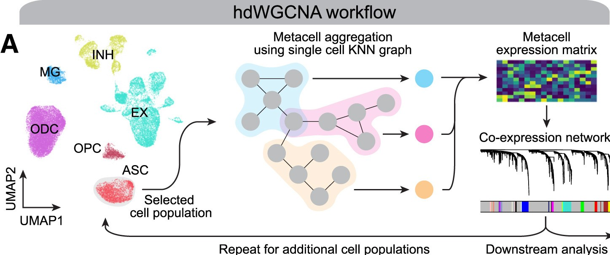 {#fig-hdwgcna, width=800}
Something more about hdWGCNA
The k-Nearest Neighbors (KNN) algorithm is used to identify groups of similar cells to aggregate, and then the average or summed expression of these cells is computed, thus yielding a metacell gene expression matrix (as if you had many bulk samples). The sparsity of the metacell expression matrix is considerably reduced when compared to the original expression matrix, and therefore it is preferable to use. We were originally motivated to use metacells in place of the original single cells because correlation network approaches such as WGCNA are sensitive to data sparsity.
hdWGCNA includes a function MetacellsByGroups to construct metacell expression matrices given a single-cell dataset. This function constructs a new Seurat object for the metacell dataset which is stored internally in the hdWGCNA experiment. The group.by parameter determines which groups metacells will be constructed in. We only want to construct metacells from cells that came from the same biological sample of origin, so it is critical to pass that information to hdWGCNA via the group.by parameter. Additionally, we usually construct metacells for each cell type separately. Thus, in this example, we are grouping by Sample and cell type to achieve the desired result.
The number of cells to be aggregated k should be tuned based on the size of the input dataset, in general a lower number for k can be used for small datasets. We generally use k values between 20 and 75. The dataset used for this tutorial has 21,369 cells, and here we use k=20. The amount of allowable overlap between metacells can be tuned using the max_shared argument. There should be a range of k values that are suitable for reducing the sparsity while retaining cellular heterogeneity for a given dataset, rather than a single optimal value.
Note: the authors of hdWGCNA have found that the metacell aggregation approach does not yield good results for extremely underrepresented cell types. For example, in this dataset, the Meristem and Xylem are the least represented, and will be excluded them from this analysis. MetacellsByGroups has a parameter min_cells to exclude groups that are smaller than a specified number of cells. Errors are likely to arise if the selected value for min_cells is too low.
Here we construct metacells and normalize the resulting expression matrix using the following code (read the additional text in the box above to understand the parameters). Note how the clusters Xylem and Quiescent center are removed, simply because they are too small and cannot be used. So from now on we do not consider them for the coexpression analysis.
# construct metacells in each group
seurat.clustered <- MetacellsByGroups(
seurat_obj = seurat.clustered,
group.by = c("predicted.id", "Condition"), # specify metadata to split by cluster and condition
reduction = 'pca', # select the dimensionality reduction to perform KNN on
k = 30, # nearest-neighbors parameter
max_shared = 10, # maximum number of shared cells between two metacells
ident.group = 'predicted.id', # set the Idents of the metacell seurat object
assay = "integrated",
slot = "scale.data",
min_cells = 100,
wgcna_name = "tutorial",
verbose=TRUE
)Warning message in MetacellsByGroups(seurat_obj = seurat.clustered, group.by = c("predicted.id", :
“Removing the following groups that did not meet min_cells: Quiescent center#Control, Quiescent center#R7A, Xylem#Control, Xylem#R7A”
Overlap QC metrics:
Cells per bin: 30
Maximum shared cells bin-bin: 10
Mean shared cells bin-bin: 1.51461988304094
Median shared cells bin-bin: 0
Overlap QC metrics:
Cells per bin: 30
Maximum shared cells bin-bin: 10
Mean shared cells bin-bin: 0.635690485005553
Median shared cells bin-bin: 0
Overlap QC metrics:
Cells per bin: 30
Maximum shared cells bin-bin: 10
Mean shared cells bin-bin: 0.335219114968392
Median shared cells bin-bin: 0
Overlap QC metrics:
Cells per bin: 30
Maximum shared cells bin-bin: 10
Mean shared cells bin-bin: 0.19742043684862
Median shared cells bin-bin: 0
Overlap QC metrics:
Cells per bin: 30
Maximum shared cells bin-bin: 10
Mean shared cells bin-bin: 1.36752136752137
Median shared cells bin-bin: 0
Overlap QC metrics:
Cells per bin: 30
Maximum shared cells bin-bin: 10
Mean shared cells bin-bin: 1.59090909090909
Median shared cells bin-bin: 0
Overlap QC metrics:
Cells per bin: 30
Maximum shared cells bin-bin: 10
Mean shared cells bin-bin: 3.57575757575758
Median shared cells bin-bin: 2
Warning message in (function (seurat_obj, name = "agg", ident.group = "seurat_clusters", :
“On average, more than 10% of cells are shared between paired bins.”
Overlap QC metrics:
Cells per bin: 30
Maximum shared cells bin-bin: 9
Mean shared cells bin-bin: 4.66666666666667
Median shared cells bin-bin: 5
Warning message in (function (seurat_obj, name = "agg", ident.group = "seurat_clusters", :
“On average, more than 10% of cells are shared between paired bins.”
Overlap QC metrics:
Cells per bin: 30
Maximum shared cells bin-bin: 10
Mean shared cells bin-bin: 2.41578947368421
Median shared cells bin-bin: 0.5
Overlap QC metrics:
Cells per bin: 30
Maximum shared cells bin-bin: 10
Mean shared cells bin-bin: 1.13725490196078
Median shared cells bin-bin: 0
Overlap QC metrics:
Cells per bin: 30
Maximum shared cells bin-bin: 10
Mean shared cells bin-bin: 4.05555555555556
Median shared cells bin-bin: 3
Warning message in (function (seurat_obj, name = "agg", ident.group = "seurat_clusters", :
“On average, more than 10% of cells are shared between paired bins.”
Overlap QC metrics:
Cells per bin: 30
Maximum shared cells bin-bin: 9
Mean shared cells bin-bin: 3.9
Median shared cells bin-bin: 3
Warning message in (function (seurat_obj, name = "agg", ident.group = "seurat_clusters", :
“On average, more than 10% of cells are shared between paired bins.”
Overlap QC metrics:
Cells per bin: 30
Maximum shared cells bin-bin: 10
Mean shared cells bin-bin: 0.690802348336595
Median shared cells bin-bin: 0
Overlap QC metrics:
Cells per bin: 30
Maximum shared cells bin-bin: 10
Mean shared cells bin-bin: 0.659649122807018
Median shared cells bin-bin: 0
Overlap QC metrics:
Cells per bin: 30
Maximum shared cells bin-bin: 10
Mean shared cells bin-bin: 1.33547632963179
Median shared cells bin-bin: 0
Overlap QC metrics:
Cells per bin: 30
Maximum shared cells bin-bin: 10
Mean shared cells bin-bin: 0.9340592861464
Median shared cells bin-bin: 0
Overlap QC metrics:
Cells per bin: 30
Maximum shared cells bin-bin: 10
Mean shared cells bin-bin: 1.6312292358804
Median shared cells bin-bin: 0
Overlap QC metrics:
Cells per bin: 30
Maximum shared cells bin-bin: 10
Mean shared cells bin-bin: 0.77909604519774
Median shared cells bin-bin: 0
#normalize metacell expression matrix:
seurat.clustered <- NormalizeMetacells(seurat.clustered)Warning message:
“Cannot find a parent environment called Seurat”Here we specify the expression matrix that we will use for network analysis. For example, we can choose the Cortex, which is important also because it expresses RINRK1 in infected samples.
seurat.clustered <- SetDatExpr(
seurat.clustered,
group_name = c('Pericycle','Cortex','Trichoblasts','Root tip',
'Phloem','Stele','Endodermis','Atrichoblasts',
'Meristem'), #all groups of interest in the data (we use all clusters)
group.by='predicted.id', # the metadata column containing the cell type info. This same column should have also been used in MetacellsByGroups
assay = 'integrated', # using integrated assay
slot = 'counts' # using count data
)5.2 Select soft-power threshold
Next we will select the soft power threshold. This is an extremely important step in the pipeline. hdWGCNA constructs a gene-gene correlation adjacency matrix to infer co-expression relationships between genes. The correlations are raised to a power to reduce the amount of noise present in the correlation matrix, thereby retaining the strong connections and removing the weak connections. Therefore, it is critical to determine a proper value for the soft power threshold.
We use the function TestSoftPowers to perform a parameter sweep for different soft power thresholds. This function helps us to guide our choice in a soft power threshold for constructing the co-expression network by inspecting the resulting network topology for different power values. The following code performs the parameter sweep and outputs a summary figure.
# Test different soft powers:
seurat.clustered <- TestSoftPowers(powers = 1:100,
seurat.clustered,
networkType = 'signed'
)
# plot the results:
plot_list <- PlotSoftPowers(seurat.clustered)
# assemble with patchwork
wrap_plots(plot_list, ncol=2)pickSoftThreshold: will use block size 1902.
pickSoftThreshold: calculating connectivity for given powers...
..working on genes 1 through 1902 of 1902
Power SFT.R.sq slope truncated.R.sq mean.k. median.k. max.k.
1 1 0.7870 6.540 0.8230 1.14e+03 1.16e+03 1330.000
2 2 0.5050 2.320 0.7630 7.07e+02 7.28e+02 964.000
3 3 0.0603 0.528 0.6600 4.49e+02 4.62e+02 718.000
4 4 0.0241 -0.281 0.7740 2.91e+02 2.97e+02 548.000
5 5 0.2060 -0.780 0.9000 1.93e+02 1.93e+02 426.000
6 6 0.4090 -1.180 0.9510 1.30e+02 1.27e+02 338.000
7 7 0.5580 -1.460 0.9780 8.97e+01 8.48e+01 272.000
8 8 0.6540 -1.620 0.9910 6.27e+01 5.72e+01 222.000
9 9 0.7350 -1.740 0.9970 4.46e+01 3.87e+01 184.000
10 10 0.7830 -1.830 0.9810 3.22e+01 2.65e+01 153.000
11 11 0.8250 -1.890 0.9740 2.35e+01 1.81e+01 130.000
12 12 0.8580 -1.960 0.9810 1.74e+01 1.25e+01 110.000
13 13 0.8600 -2.020 0.9540 1.31e+01 8.80e+00 94.700
14 14 0.8390 -2.080 0.9060 9.96e+00 6.18e+00 81.800
15 15 0.8500 -2.070 0.9010 7.65e+00 4.37e+00 71.200
16 16 0.9030 -2.020 0.9560 5.94e+00 3.11e+00 62.400
17 17 0.8950 -2.030 0.9480 4.66e+00 2.24e+00 54.900
18 18 0.9090 -1.990 0.9560 3.69e+00 1.61e+00 48.600
19 19 0.9080 -1.970 0.9440 2.95e+00 1.16e+00 43.200
20 20 0.8770 -1.990 0.8950 2.37e+00 8.56e-01 38.500
21 21 0.8810 -1.960 0.8940 1.93e+00 6.31e-01 34.500
22 22 0.8930 -1.930 0.9030 1.57e+00 4.67e-01 31.100
23 23 0.9020 -1.900 0.9100 1.30e+00 3.41e-01 28.000
24 24 0.3400 -2.670 0.1990 1.07e+00 2.55e-01 25.400
25 25 0.3390 -2.620 0.1970 8.94e-01 1.89e-01 23.100
26 26 0.3420 -2.580 0.2000 7.50e-01 1.41e-01 21.000
27 27 0.3460 -2.540 0.2050 6.32e-01 1.05e-01 19.200
28 28 0.3480 -2.510 0.2080 5.35e-01 8.04e-02 17.600
29 29 0.3540 -2.490 0.2170 4.55e-01 6.06e-02 16.100
30 30 0.3530 -2.450 0.2170 3.89e-01 4.56e-02 14.800
31 31 0.3820 -2.500 0.3120 3.35e-01 3.53e-02 13.700
32 32 0.3200 -2.220 0.1280 2.89e-01 2.73e-02 12.600
33 33 0.3210 -2.190 0.1290 2.50e-01 2.08e-02 11.700
34 34 0.3220 -2.160 0.1310 2.17e-01 1.61e-02 10.900
35 35 0.3240 -2.140 0.1330 1.90e-01 1.25e-02 10.100
36 36 0.3260 -2.120 0.1350 1.66e-01 9.64e-03 9.400
37 37 0.3280 -2.090 0.1380 1.46e-01 7.42e-03 8.770
38 38 0.3280 -2.070 0.1390 1.29e-01 5.78e-03 8.200
39 39 0.3290 -2.040 0.1400 1.14e-01 4.42e-03 7.670
40 40 0.2780 -2.410 0.0721 1.01e-01 3.42e-03 7.190
41 41 0.2790 -2.380 0.0744 9.01e-02 2.64e-03 6.740
42 42 0.2790 -2.370 0.0737 8.05e-02 2.07e-03 6.340
43 43 0.2800 -2.340 0.0745 7.21e-02 1.62e-03 5.960
44 44 0.2810 -2.320 0.0757 6.47e-02 1.26e-03 5.620
45 45 0.2810 -2.310 0.0765 5.83e-02 1.00e-03 5.300
46 46 0.2830 -2.290 0.0784 5.26e-02 7.83e-04 5.010
47 47 0.3010 -2.320 0.1050 4.76e-02 6.10e-04 4.740
48 48 0.3000 -2.290 0.1040 4.32e-02 4.74e-04 4.480
49 49 0.2990 -2.270 0.1040 3.93e-02 3.75e-04 4.250
50 50 0.3030 -2.250 0.1090 3.58e-02 2.99e-04 4.030
51 51 0.3040 -2.230 0.1110 3.27e-02 2.39e-04 3.830
52 52 0.3050 -2.210 0.1120 2.99e-02 1.91e-04 3.640
53 53 0.3060 -2.200 0.1140 2.74e-02 1.51e-04 3.460
54 54 0.2920 -2.420 0.0894 2.52e-02 1.19e-04 3.300
55 55 0.2920 -2.400 0.0896 2.32e-02 9.27e-05 3.140
56 56 0.2930 -2.390 0.0906 2.14e-02 7.35e-05 3.000
57 57 0.2950 -2.370 0.0933 1.98e-02 5.97e-05 2.860
58 58 0.2960 -2.340 0.0947 1.83e-02 4.85e-05 2.730
59 59 0.2970 -2.320 0.0963 1.70e-02 3.86e-05 2.610
60 60 0.2980 -2.310 0.0981 1.58e-02 3.09e-05 2.500
61 61 0.2970 -2.290 0.0969 1.47e-02 2.46e-05 2.390
62 62 0.2990 -2.270 0.0994 1.37e-02 1.94e-05 2.290
63 63 0.2990 -2.250 0.0994 1.28e-02 1.54e-05 2.200
64 64 0.3010 -2.230 0.1020 1.19e-02 1.22e-05 2.110
65 65 0.3000 -2.220 0.1010 1.12e-02 9.72e-06 2.020
66 66 0.3010 -2.210 0.1020 1.05e-02 7.74e-06 1.940
67 67 0.3030 -2.200 0.1040 9.81e-03 6.17e-06 1.860
68 68 0.3040 -2.190 0.1060 9.22e-03 4.95e-06 1.790
69 69 0.3050 -2.180 0.1080 8.67e-03 3.99e-06 1.730
70 70 0.3190 -2.210 0.1310 8.16e-03 3.25e-06 1.660
71 71 0.3200 -2.200 0.1340 7.70e-03 2.58e-06 1.600
72 72 0.2990 -2.270 0.1080 7.26e-03 2.03e-06 1.550
73 73 0.2980 -2.260 0.1060 6.86e-03 1.62e-06 1.490
74 74 0.3000 -2.240 0.1080 6.49e-03 1.31e-06 1.440
75 75 0.3020 -2.230 0.1090 6.14e-03 1.08e-06 1.390
76 76 0.3040 -2.220 0.1110 5.82e-03 8.57e-07 1.350
77 77 0.3030 -2.210 0.1100 5.52e-03 6.87e-07 1.300
78 78 0.3050 -2.200 0.1110 5.24e-03 5.63e-07 1.260
79 79 0.3050 -2.180 0.1110 4.97e-03 4.58e-07 1.220
80 80 0.3040 -2.180 0.1100 4.73e-03 3.69e-07 1.180
81 81 0.3030 -2.190 0.1080 4.50e-03 2.97e-07 1.150
82 82 0.3030 -2.170 0.1080 4.28e-03 2.38e-07 1.110
83 83 0.3020 -2.150 0.1080 4.08e-03 1.90e-07 1.080
84 84 0.3040 -2.150 0.1090 3.89e-03 1.51e-07 1.040
85 85 0.3050 -2.140 0.1110 3.72e-03 1.20e-07 1.010
86 86 0.3070 -2.130 0.1120 3.55e-03 9.65e-08 0.982
87 87 0.3080 -2.120 0.1140 3.39e-03 7.71e-08 0.953
88 88 0.3090 -2.130 0.1150 3.24e-03 6.29e-08 0.926
89 89 0.3100 -2.140 0.1160 3.10e-03 5.03e-08 0.899
90 90 0.3110 -2.140 0.1170 2.97e-03 4.04e-08 0.874
91 91 0.3130 -2.130 0.1190 2.85e-03 3.23e-08 0.849
92 92 0.3140 -2.120 0.1200 2.73e-03 2.58e-08 0.826
93 93 0.3150 -2.130 0.1220 2.62e-03 2.08e-08 0.803
94 94 0.3270 -2.160 0.1350 2.51e-03 1.70e-08 0.781
95 95 0.3290 -2.150 0.1370 2.41e-03 1.40e-08 0.760
96 96 0.3300 -2.140 0.1390 2.32e-03 1.15e-08 0.740
97 97 0.3300 -2.130 0.1390 2.23e-03 9.37e-09 0.720
98 98 0.3320 -2.120 0.1410 2.14e-03 7.61e-09 0.701
99 99 0.3400 -2.130 0.1540 2.06e-03 6.14e-09 0.683
100 100 0.3410 -2.120 0.1550 1.98e-03 4.95e-09 0.666
Power SFT.R.sq slope truncated.R.sq mean.k. median.k. max.k.
1 1 0.78715066 6.5419434 0.8226937 1142.8616 1164.8542 1330.4551
2 2 0.50547179 2.3222895 0.7627136 706.9821 727.8092 963.5889
3 3 0.06030832 0.5277599 0.6599972 448.5438 461.6084 717.8182
4 4 0.02406336 -0.2805631 0.7737510 291.1354 296.5913 547.5911
5 5 0.20640114 -0.7801742 0.9004039 192.9425 193.3074 426.3568
6 6 0.40937211 -1.1838404 0.9509733 130.3530 127.1297 337.9309Warning message:
“executing %dopar% sequentially: no parallel backend registered”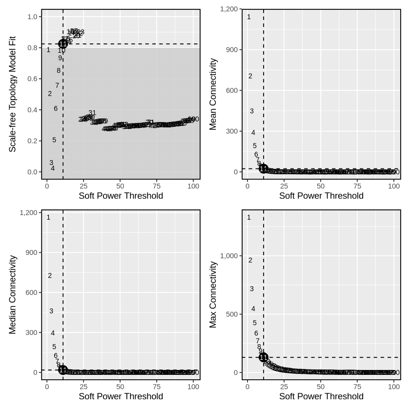
The general guidance for hdWGCNA is to pick the lowest soft power threshold that has Model Fit greater than or equal to 0.8, so in this case we would select our soft power threshold to be 11 following the illustration fo Figure 28. Later on, the ConstructNetwork command will automatically select the soft power threshold if the user does not provide one.
5.3 Construction of co-expression network
We now have everything that we need to construct our co-expression network. Here we use the hdWGCNA function ConstructNetwork. This function has quite a few parameters to play with if you are an advanced user (read this manual and the function ConstructNetwork is based on here), but we use default parameters that work well with many single-cell datasets.
The following code constructs the co-expression network using the soft power threshold selected before:
# construct co-expression network:
seurat.clustered <- ConstructNetwork(na.rm=TRUE,
seurat.clustered,
soft_power=11,
setDatExpr=FALSE,
tom_name = 'Cortex', # name of the topoligical overlap matrix written to disk
overwrite_tom = TRUE
)Warning message in ConstructNetwork(na.rm = TRUE, seurat.clustered, soft_power = 11, :
“Overwriting TOM TOM/Cortex_TOM.rda” Calculating consensus modules and module eigengenes block-wise from all genes
Calculating topological overlaps block-wise from all genes
Flagging genes and samples with too many missing values...
..step 1
TOM calculation: adjacency..
..will not use multithreading.
Fraction of slow calculations: 0.000000
..connectivity..
..matrix multiplication (system BLAS)..
..normalization..
..done.
..Working on block 1 .
..Working on block 1 .
..merging consensus modules that are too close..We can plot the network dendrogram in Figure 29. Each leaf on the dendrogram represents a single gene, and the color at the bottom indicates the co-expression module assignment.
Note: the “gray” module consists of genes that were not grouped into any co-expression module. The gray module is to be ignored for all downstream analysis and interpretation.
PlotDendrogram(seurat.clustered, main='Phloem hdWGCNA Dendrogram')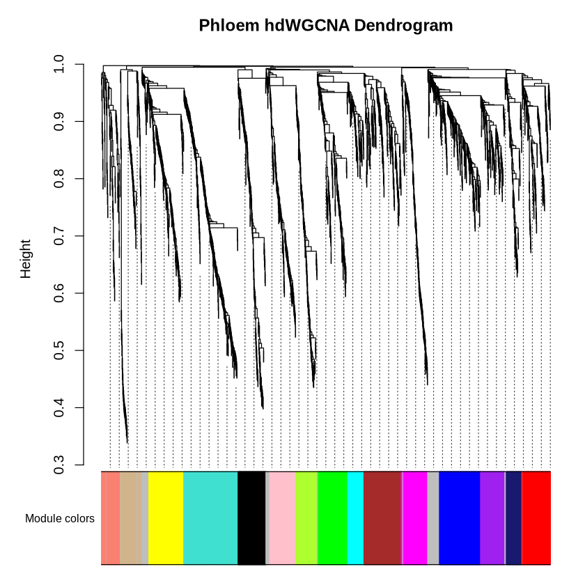
5.3.1 Module Eigengenes (MEs)
We calculate harmonized module eigengenes. This is a way of doing PCA of the expression matrix of metacells including the genes of one coexpression module at a time. Thus we have a PCA of the data for each module. The first principal component of each PCA is called module eigengene: it is enough to distinguish one module from all the others and characterize the expression pattern of the module (Langfelder and Horvath (2007))!
Dimensionality reduction techniques are a very hot topic in single-cell genomics (Xiang et al. (2021)). It is well known that technical artifacts can muddy the analysis of single-cell datasets, and over the years there have been many methods that aim to reduce the effects of these artifacts. Therefore it stands to reason that MEs would be subject to these technical artifacts as well, and hdWGCNA seeks to alleviate these effects by using the integration software Harmony (Korsunsky et al. (2019)).
The following code performs the module eigengene computation harmonizing by the Sample of origin using the group.by.vars parameter.
# need to run ScaleData first or else harmony throws an error:
seurat.clustered <- ScaleData(seurat.clustered,
features=VariableFeatures(seurat.clustered),
verbose = FALSE)# compute all MEs in the full single-cell dataset
seurat.clustered <- ModuleEigengenes(
seurat.clustered,
group.by.vars="orig.ident",
verbose = FALSE
)[1] "turquoise"
[1] "brown"
[1] "salmon"
[1] "black"
[1] "red"
[1] "midnightblue"
[1] "magenta"
[1] "yellow"
[1] "blue"
[1] "green"
[1] "cyan"
[1] "grey"
[1] "greenyellow"
[1] "tan"
[1] "pink"
[1] "purple"Centering and scaling data matrix
Warning message:
“Keys should be one or more alphanumeric characters followed by an underscore, setting key from pcaturquoise to pcaturquoise_”
Centering and scaling data matrix
Warning message:
“Keys should be one or more alphanumeric characters followed by an underscore, setting key from pcabrown to pcabrown_”
Warning message:
“Key ‘harmony_’ taken, using ‘lsmpe_’ instead”
Centering and scaling data matrix
Warning message in irlba(A = t(x = object), nv = npcs, ...):
“You're computing too large a percentage of total singular values, use a standard svd instead.”
Warning message:
“Keys should be one or more alphanumeric characters followed by an underscore, setting key from pcasalmon to pcasalmon_”
Centering and scaling data matrix
Warning message:
“Keys should be one or more alphanumeric characters followed by an underscore, setting key from pcablack to pcablack_”
Warning message:
“Key ‘harmony_’ taken, using ‘nibyo_’ instead”
Centering and scaling data matrix
Warning message:
“Keys should be one or more alphanumeric characters followed by an underscore, setting key from pcared to pcared_”
Centering and scaling data matrix
Warning message in irlba(A = t(x = object), nv = npcs, ...):
“You're computing too large a percentage of total singular values, use a standard svd instead.”
Warning message:
“Keys should be one or more alphanumeric characters followed by an underscore, setting key from pcamidnightblue to pcamidnightblue_”
Warning message:
“Key ‘harmony_’ taken, using ‘lkzye_’ instead”
Centering and scaling data matrix
Warning message:
“Keys should be one or more alphanumeric characters followed by an underscore, setting key from pcamagenta to pcamagenta_”
Centering and scaling data matrix
Warning message:
“Keys should be one or more alphanumeric characters followed by an underscore, setting key from pcayellow to pcayellow_”
Warning message:
“Key ‘harmony_’ taken, using ‘ltnwf_’ instead”
Centering and scaling data matrix
Warning message:
“Keys should be one or more alphanumeric characters followed by an underscore, setting key from pcablue to pcablue_”
Centering and scaling data matrix
Warning message:
“Keys should be one or more alphanumeric characters followed by an underscore, setting key from pcagreen to pcagreen_”
Warning message:
“Key ‘harmony_’ taken, using ‘xolrz_’ instead”
Centering and scaling data matrix
Warning message in irlba(A = t(x = object), nv = npcs, ...):
“You're computing too large a percentage of total singular values, use a standard svd instead.”
Warning message:
“Keys should be one or more alphanumeric characters followed by an underscore, setting key from pcacyan to pcacyan_”
Centering and scaling data matrix
Warning message:
“Keys should be one or more alphanumeric characters followed by an underscore, setting key from pcagrey to pcagrey_”
Warning message:
“Key ‘harmony_’ taken, using ‘ibzol_’ instead”
Centering and scaling data matrix
Warning message in irlba(A = t(x = object), nv = npcs, ...):
“You're computing too large a percentage of total singular values, use a standard svd instead.”
Warning message:
“Keys should be one or more alphanumeric characters followed by an underscore, setting key from pcagreenyellow to pcagreenyellow_”
Centering and scaling data matrix
Warning message in irlba(A = t(x = object), nv = npcs, ...):
“You're computing too large a percentage of total singular values, use a standard svd instead.”
Warning message:
“Keys should be one or more alphanumeric characters followed by an underscore, setting key from pcatan to pcatan_”
Warning message:
“Key ‘harmony_’ taken, using ‘pical_’ instead”
Centering and scaling data matrix
Warning message:
“Keys should be one or more alphanumeric characters followed by an underscore, setting key from pcapink to pcapink_”
Centering and scaling data matrix
Warning message:
“Keys should be one or more alphanumeric characters followed by an underscore, setting key from pcapurple to pcapurple_”
Warning message:
“Key ‘harmony_’ taken, using ‘vnltp_’ instead”5.3.2 Compute module connectivity
In co-expression network analysis, we often want to focus on the hub genes, those which are highly connected within each module. Therefore we wish to determine the eigengene-based connectivity, also known as kME, of each gene. The ModuleConnectivity function computes the kMEs in the single-cell dataset (rather than the metacell dataset). This function essentially computes pairwise correlations between genes and module eigengenes. kME can be computed for all cells in the dataset, but it is recommended computing kMEs in the cell type(s) or group(s) previously used to run ConstructNetwork.
# compute eigengene-based connectivity (kME):
seurat.clustered <- ModuleConnectivity(
seurat.clustered,
group.by = 'predicted.id',
group_name = c('Pericycle','Cortex','Trichoblasts','Root tip',
'Phloem','Stele','Endodermis','Atrichoblasts',
'Meristem','Xylem'),
)For convenience, we re-name the hdWGCNA modules to indicate that they are from the Cortex cluster.
# rename the modules
seurat.clustered <- ResetModuleNames(
seurat.clustered,
new_name = "Lotus-Mod"
)We can visualize the genes in each module ranked by kME using the PlotKMEs function.
options(repr.plot.width=20, repr.plot.height=25)
p <- capture.output({PlotKMEs(seurat.clustered, ncol=3, text_size = 4);})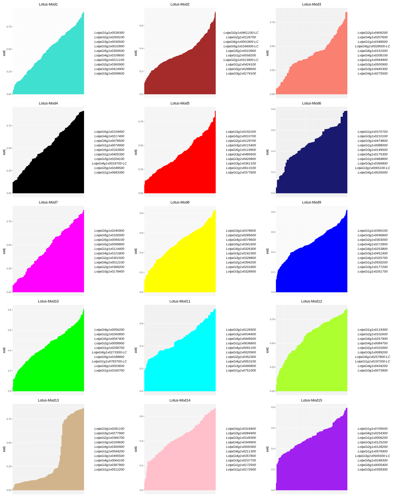
5.3.3 Getting the module assignment table
The plots of Figure 30 are a bit hard to read, though fancy to plot. hdWGCNA allows for easy access of the module assignment table using the GetModules function. This table consists of three columns: gene_name stores the gene’s symbol or ID, module stores the gene’s module assignment, and color stores a color mapping for each module (which is used in plotting steps). If ModuleConnectivity has been used on this hdWGCNA experiment, as it is our case, this table has additional columns with the connectivities plotted in Figure 30
# get the module assignment table:
modules <- GetModules(seurat.clustered)
# show the first 6 columns:
head(modules[,1:6])| gene_name | module | color | kME_Lotus-Mod1 | kME_Lotus-Mod2 | kME_Lotus-Mod3 | |
|---|---|---|---|---|---|---|
| <chr> | <fct> | <chr> | <dbl> | <dbl> | <dbl> | |
| LotjaGi3g1v0321700 | LotjaGi3g1v0321700 | Lotus-Mod1 | turquoise | 0.8397488 | -0.1355572 | -0.2505539 |
| LotjaGi2g1v0360900 | LotjaGi2g1v0360900 | Lotus-Mod1 | turquoise | 0.9035133 | -0.1649301 | -0.2914684 |
| LotjaGi3g1v0506700 | LotjaGi3g1v0506700 | Lotus-Mod1 | turquoise | 0.7470380 | -0.1574194 | -0.2274758 |
| LotjaGi3g1v0222100 | LotjaGi3g1v0222100 | Lotus-Mod2 | brown | -0.1650440 | 0.4451741 | -0.1961163 |
| LotjaGi3g1v0445300 | LotjaGi3g1v0445300 | Lotus-Mod3 | salmon | -0.2402357 | -0.1797755 | 0.8505632 |
| LotjaGi6g1v0155800 | LotjaGi6g1v0155800 | Lotus-Mod1 | turquoise | 0.7323678 | -0.1353630 | -0.2581496 |
A table of the top N hub genes sorted by kME can be extracted using the GetHubGenes function. Here we choose the top 10 genes, but you can change the value if you want
# get hub genes
hub_df <- GetHubGenes(seurat.clustered, n_hubs = 10)
head( hub_df )| gene_name | module | kME | |
|---|---|---|---|
| <chr> | <fct> | <dbl> | |
| 1 | LotjaGi1g1v0539300 | Lotus-Mod1 | 0.8522461 |
| 2 | LotjaGi2g1v0269100 | Lotus-Mod1 | 0.8544151 |
| 3 | LotjaGi3g1v0030500 | Lotus-Mod1 | 0.8551061 |
| 4 | LotjaGi3g1v0010900 | Lotus-Mod1 | 0.8877517 |
| 5 | LotjaGi5g1v0359500 | Lotus-Mod1 | 0.8911171 |
| 6 | LotjaGi4g1v0109600 | Lotus-Mod1 | 0.8935191 |
Again, we can assign GO terms to better check associated functions
go_table <- read.table("./LJ_GO_terms.gaf", skip=6, sep='\t', fill=TRUE, quote = "\"")hub_df <- addGOterms(input_table = hub_df,
go_table = go_table,
gene_column = 'gene_name',
n.cores = 16)Now it is easy to look at each module and relevant GO terms.
hub_filtered <- hub_df %>% filter(module == "Lotus-Mod3")hub_filtered| gene_name | module | kME | GO |
|---|---|---|---|
| <chr> | <fct> | <dbl> | <chr> |
| LotjaGi2g1v0406200 | Lotus-Mod3 | 0.6885007 | Undefined |
| LotjaGi4g1v0207600 | Lotus-Mod3 | 0.7048991 | Undefined |
| LotjaGi1g1v0348000 | Lotus-Mod3 | 0.7078898 | Aspartic proteinase nepenthesin-1; TAIR: AT1G09750.1 Eukaryotic aspartyl protease family protein; Swiss-Prot: sp |
| LotjaGi6g1v0028000-LC | Lotus-Mod3 | 0.7213880 | Undefined |
| LotjaGi6g1v0151500 | Lotus-Mod3 | 0.7284848 | Undefined |
| LotjaGi4g1v0208100 | Lotus-Mod3 | 0.7491915 | Undefined |
| LotjaGi1g1v0594900 | Lotus-Mod3 | 0.7680713 | Undefined |
| LotjaGi3g1v0505900 | Lotus-Mod3 | 0.7862156 | Undefined |
| LotjaGi3g1v0445300 | Lotus-Mod3 | 0.8505632 | Undefined |
| LotjaGi4g1v0275500 | Lotus-Mod3 | 0.8577066 | Undefined |
We save the table for later use
write.csv(hub_df, "top_genes_networks.csv")We can also plot the modules to see where they are most relevant on the UMAP plot. First we calculate the scores of each module.
features_list <- list()
for(MOD in hub_df$module){
genes <- hub_df %>% filter(module == MOD)
genes_mod <- genes$gene_name
features_list[[MOD]] <- genes_mod
}
seurat.clustered <- AddModuleScore(
object = seurat.clustered,
features = features_list,
ctrl = 5,
)
seurat.clustered <- renameScores(markers_list = features_list, seurat_data = seurat.clustered)
plotScoresUMAP(markers_list = features_list, seurat_data = seurat.clustered)Scores renamed FROM
TO
Cluster1
Cluster2
Cluster3
Cluster4
Cluster5
Cluster6
Cluster7
Cluster8
Cluster9
Cluster10
Cluster11
Cluster12
Cluster13
Cluster14
Cluster15
Lotus-Mod1
Lotus-Mod2
Lotus-Mod3
Lotus-Mod4
Lotus-Mod5
Lotus-Mod6
Lotus-Mod7
Lotus-Mod8
Lotus-Mod9
Lotus-Mod10
Lotus-Mod11
Lotus-Mod12
Lotus-Mod13
Lotus-Mod14
Lotus-Mod15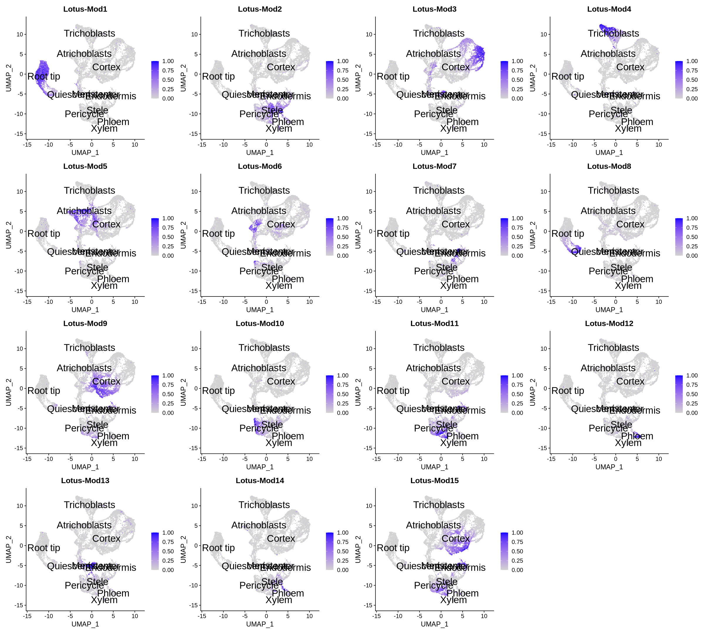
We save the seurat object and the network (because for some inscrutable error, it cannot load together with the Seurat object when it is needed again).
SaveH5Seurat(seurat.clustered, 'seurat.network.h5Seurat', overwrite = TRUE, verbose=FALSE)Warning message:
“Overwriting previous file seurat.network.h5Seurat”
Creating h5Seurat file for version 3.1.5.9900
saveRDS(seurat.clustered@misc, "network_lotus.RDS")5.4 Differential module Expression (DME) analysis
Lastly, we can see which modules are most expressed in a specific cluster against the others, in a similar way to differential gene expression.
seurat.network <- LoadH5Seurat('seurat.network.h5Seurat', misc=FALSE, verbose=FALSE)Validating h5Seurat file
Warning message:
“Adding a command log without an assay associated with it”[1] "Couldn't delete 144115188075856517"seurat.network@misc <- readRDS("network_lotus.RDS")Here we discuss how to perform DME testing between two different groups. We use the hdWGCNA function FindDMEs, which is similar to the Seurat function FindMarkers. We use the Mann-Whitney U test, also known as the Wilcoxon test, to compare two groups, but other tests can be used at the user’s discretion with the test.use parameter.
We are interested in defining our two groups both by condition and by choosing a cluster, for example Cortex. We filter DMEs by p-value and fold-change.
R7Agroup <- seurat.network@meta.data %>% subset(Condition == 'R7A' & predicted.id == 'Cortex') %>% rownames
WTgroup <- seurat.network@meta.data %>% subset(Condition == 'Control' & predicted.id == 'Cortex') %>% rownamesDMEs <- FindDMEs(
seurat.network,
barcodes1 = R7Agroup,
barcodes2 = WTgroup,
test.use='wilcox',
wgcna_name='tutorial'
) %>% filter(p_val_adj < 0.001 & abs(avg_log2FC)>1) %>% select(-p_val)[1] 17721 15
[1] "Lotus-Mod3" "Lotus-Mod13" "Lotus-Mod5" "Lotus-Mod6" "Lotus-Mod2"
[6] "Lotus-Mod12" "Lotus-Mod14" "Lotus-Mod7" "Lotus-Mod10" "Lotus-Mod11"
[11] "Lotus-Mod9" "Lotus-Mod15" "Lotus-Mod4" "Lotus-Mod1" "Lotus-Mod8" The resulting table below is very similar to the one for differential gene expression. Now the p-values and fold changes are referred to the differential module expression in the inoculated cortex VS the control cortex.
DMEs| avg_log2FC | pct.1 | pct.2 | p_val_adj | module | |
|---|---|---|---|---|---|
| <dbl> | <dbl> | <dbl> | <dbl> | <chr> | |
| Lotus-Mod11 | 1.321296 | 0.258 | 0.139 | 3.169398e-37 | Lotus-Mod11 |
| Lotus-Mod6 | 1.058396 | 0.445 | 0.329 | 2.570134e-32 | Lotus-Mod6 |
| Lotus-Mod1 | -1.213882 | 0.022 | 0.042 | 1.141514e-05 | Lotus-Mod1 |
| Lotus-Mod4 | -1.812261 | 0.063 | 0.087 | 8.976603e-04 | Lotus-Mod4 |
We can also do a lollipop plot as in Figure 31, where the size of each circle is the p-value, and the x-axis is the log-fold change. A cross on a circle means the p-value is not significant. Module 4 and 11 are very interesting because of their over- and under-expression, though you should note the difference in percentages is pretty small. In our case we filtered out p-values that were too high, so we have only significant modules in the plot.
options(repr.plot.width=6, repr.plot.height=6)
PlotDMEsLollipop(
seurat.network,
DMEs,
wgcna_name='tutorial',
pvalue = "p_val_adj",
)Loading required package: ggforestplot
[1] "Please be aware comparison group/groups are not provided, which may casue an ERROR. PlotDMEsLollipop function will automatically assume all values are within the same group."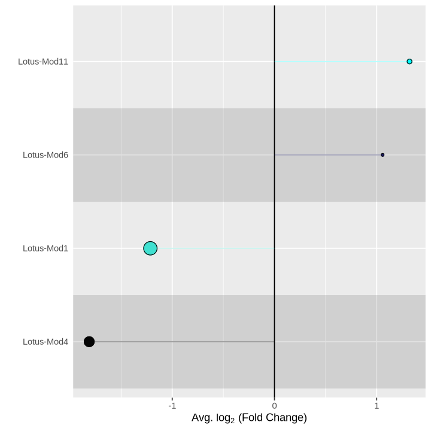
5.4.1 One-versus-all DME analysis
This is another case of DME analysis, where each cluster is tested against the rest of the data to see which modules are differentially expressed. We can test by cell type (predicted.id) or by condition (Condition).
DMEs_all <- FindAllDMEs(
seurat.network,
group.by = 'predicted.id',
wgcna_name = 'tutorial'
) [1] "Cortex"
[1] "Trichoblasts"
[1] "Root tip"
[1] "Meristem"
[1] "Phloem"
[1] "Pericycle"
[1] "Stele"
[1] "Atrichoblasts"
[1] "Xylem"
[1] "Endodermis"
[1] "Quiescent center"The table is usually big, but you can choose to filter by various parameters as below, and to look only at one cluster of interest
DMEs_cortex <- DMEs_all %>% filter(p_val_adj < .001 & abs(avg_log2FC)>1
& is.finite(avg_log2FC)
& group=='Cortex')The DME analysis results in a lot of significant results for the cortex. But we can see that pct.1 and pct.2 vary a lot. Module 12 has more than 50% of the cells expressing the module, and 7% in the rest of the data, while Module 20 has percentages of 52% vs 22%. Here it is always best to report those percentages and log-fold changes starting from the highest ones.
DMEs_cortex| p_val | avg_log2FC | pct.1 | pct.2 | p_val_adj | module | group | |
|---|---|---|---|---|---|---|---|
| <dbl> | <dbl> | <dbl> | <dbl> | <dbl> | <chr> | <chr> | |
| Cortex.Lotus-Mod3 | 0.000000e+00 | 2.690457 | 0.518 | 0.149 | 0.000000e+00 | Lotus-Mod3 | Cortex |
| Cortex.Lotus-Mod6 | 0.000000e+00 | 2.516551 | 0.397 | 0.137 | 0.000000e+00 | Lotus-Mod6 | Cortex |
| Cortex.Lotus-Mod2 | 0.000000e+00 | -4.225120 | 0.075 | 0.348 | 0.000000e+00 | Lotus-Mod2 | Cortex |
| Cortex.Lotus-Mod12 | 0.000000e+00 | -4.736902 | 0.038 | 0.283 | 0.000000e+00 | Lotus-Mod12 | Cortex |
| Cortex.Lotus-Mod9 | 0.000000e+00 | 2.309667 | 0.522 | 0.249 | 0.000000e+00 | Lotus-Mod9 | Cortex |
| Cortex.Lotus-Mod1 | 0.000000e+00 | -5.372586 | 0.031 | 0.284 | 0.000000e+00 | Lotus-Mod1 | Cortex |
| Cortex.Lotus-Mod14 | 1.424592e-288 | -3.210875 | 0.077 | 0.295 | 2.136888e-287 | Lotus-Mod14 | Cortex |
| Cortex.Lotus-Mod10 | 3.164844e-256 | -4.539404 | 0.075 | 0.266 | 4.747266e-255 | Lotus-Mod10 | Cortex |
| Cortex.Lotus-Mod15 | 2.013474e-254 | 1.032737 | 0.476 | 0.218 | 3.020212e-253 | Lotus-Mod15 | Cortex |
| Cortex.Lotus-Mod4 | 8.327387e-179 | -3.730921 | 0.073 | 0.224 | 1.249108e-177 | Lotus-Mod4 | Cortex |
| Cortex.Lotus-Mod11 | 1.287590e-108 | -2.435203 | 0.209 | 0.325 | 1.931384e-107 | Lotus-Mod11 | Cortex |
| Cortex.Lotus-Mod7 | 1.020206e-39 | -2.764012 | 0.122 | 0.188 | 1.530309e-38 | Lotus-Mod7 | Cortex |
| Cortex.Lotus-Mod8 | 2.830229e-24 | -2.096240 | 0.246 | 0.291 | 4.245343e-23 | Lotus-Mod8 | Cortex |
| Cortex.Lotus-Mod13 | 3.424949e-07 | -1.448706 | 0.172 | 0.202 | 5.137423e-06 | Lotus-Mod13 | Cortex |
You can look at any other cluster. For example trichoblasts. Here you can see how module 4 pops up as being basically entirely expressed only in Trichoblasts.
DMEs_tricho <- DMEs_all %>% filter(p_val_adj < .001 & abs(avg_log2FC)>1
& is.finite(avg_log2FC)
& group=='Trichoblasts')DMEs_tricho| p_val | avg_log2FC | pct.1 | pct.2 | p_val_adj | module | group | |
|---|---|---|---|---|---|---|---|
| <dbl> | <dbl> | <dbl> | <dbl> | <dbl> | <chr> | <chr> | |
| Trichoblasts.Lotus-Mod4 | 0.000000e+00 | 6.462799 | 0.998 | 0.078 | 0.000000e+00 | Lotus-Mod4 | Trichoblasts |
| Trichoblasts.Lotus-Mod15 | 4.589076e-165 | -6.220812 | 0.016 | 0.357 | 6.883613e-164 | Lotus-Mod15 | Trichoblasts |
| Trichoblasts.Lotus-Mod11 | 2.472972e-134 | -6.784385 | 0.011 | 0.303 | 3.709458e-133 | Lotus-Mod11 | Trichoblasts |
| Trichoblasts.Lotus-Mod9 | 1.165473e-129 | -3.592430 | 0.095 | 0.390 | 1.748210e-128 | Lotus-Mod9 | Trichoblasts |
| Trichoblasts.Lotus-Mod3 | 6.823088e-111 | -4.113294 | 0.065 | 0.327 | 1.023463e-109 | Lotus-Mod3 | Trichoblasts |
| Trichoblasts.Lotus-Mod6 | 7.331605e-111 | -5.105053 | 0.014 | 0.268 | 1.099741e-109 | Lotus-Mod6 | Trichoblasts |
| Trichoblasts.Lotus-Mod2 | 1.103509e-101 | -4.652608 | 0.016 | 0.255 | 1.655264e-100 | Lotus-Mod2 | Trichoblasts |
| Trichoblasts.Lotus-Mod10 | 1.334983e-80 | -6.542761 | 0.009 | 0.204 | 2.002475e-79 | Lotus-Mod10 | Trichoblasts |
| Trichoblasts.Lotus-Mod12 | 5.703476e-72 | -5.346382 | 0.017 | 0.197 | 8.555215e-71 | Lotus-Mod12 | Trichoblasts |
| Trichoblasts.Lotus-Mod14 | 9.752613e-68 | -3.932097 | 0.037 | 0.221 | 1.462892e-66 | Lotus-Mod14 | Trichoblasts |
| Trichoblasts.Lotus-Mod5 | 1.462617e-64 | -3.455537 | 0.089 | 0.271 | 2.193925e-63 | Lotus-Mod5 | Trichoblasts |
| Trichoblasts.Lotus-Mod13 | 1.126768e-63 | -2.689731 | 0.032 | 0.205 | 1.690151e-62 | Lotus-Mod13 | Trichoblasts |
| Trichoblasts.Lotus-Mod1 | 6.001523e-29 | -5.077260 | 0.090 | 0.187 | 9.002285e-28 | Lotus-Mod1 | Trichoblasts |
| Trichoblasts.Lotus-Mod8 | 9.594551e-24 | -2.423585 | 0.179 | 0.282 | 1.439183e-22 | Lotus-Mod8 | Trichoblasts |
| Trichoblasts.Lotus-Mod7 | 6.536989e-21 | -3.664154 | 0.083 | 0.168 | 9.805484e-20 | Lotus-Mod7 | Trichoblasts |
For better visualization, you can always use the lolliplot plots using the correct table as an argument, so that you can plot multiple instances for the various clusters. In Figure 32 we plot boyh for cortex and trichoblasts from the tables determined in the code above.
options(repr.plot.width=12, repr.plot.height=6)
#lollipop with cortex table
p1 <- PlotDMEsLollipop(
seurat.network,
DMEs_cortex,
wgcna_name='tutorial',
pvalue = "p_val_adj",
)
#lollipop with trichoblasts table
p2 <- PlotDMEsLollipop(
seurat.network,
DMEs_tricho,
wgcna_name='tutorial',
pvalue = "p_val_adj",
)
#plot an add a title
p1 + ggtitle("DMEs of Cortex VS data") +
p2 + ggtitle("DMEs of Trichoblasts VS data")[1] "Please be aware comparison group/groups are not provided, which may casue an ERROR. PlotDMEsLollipop function will automatically assume all values are within the same group."
[1] "Please be aware comparison group/groups are not provided, which may casue an ERROR. PlotDMEsLollipop function will automatically assume all values are within the same group."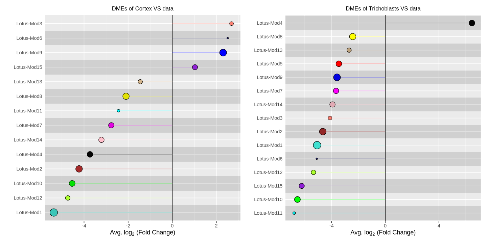
Wrapping Up
This is the end of the tutorial. We have not shown much biological conclusion from the analysis - this is something that comes out by studying for example the GO terms of the various genes and modules identified. The scope of the tutorial was mainly to give all the means to perform your own analysis, from which you can then gain biological insight.
If you are interested in more resources to learn single cell analysis, you can find them at some of our courses. We have other single-cell analysis tutorials including different tools at
- Introduction to NGS data analysis (found in the
Genomics Sandboxat this link - note that this is in thepythonlanguage ) - Introduction to scRNAseq analysis in R (found in the
Transcriptomics Sandboxat this link )
You can also find a lot of material in the Seurat webpage. If you create a new notebook in this environment, you are likely to have all the packages needed to try the Seurat tutorials.
Advanced single cell analysis - Single Cell Analysis Tutorial Advanced single cell analysis - Single Cell Analysis Tutorial Advanced single cell analysis - Single Cell Analysis Tutorial Advanced single cell analysis
Adossa, Nigatu, Sofia Khan, Kalle T. Rytkönen, and Laura L. Elo. 2021. “Computational Strategies for Single-Cell Multi-Omics Integration.” Computational and Structural Biotechnology Journal 19: 2588–96. https://doi.org/10.1016/j.csbj.2021.04.060.
Becht, Etienne, Leland McInnes, John Healy, Charles-Antoine Dutertre, Immanuel W H Kwok, Lai Guan Ng, Florent Ginhoux, and Evan W Newell. 2019. “Dimensionality Reduction for Visualizing Single-Cell Data Using UMAP.” Nature Biotechnology 37 (1): 38–44. https://doi.org/10.1038/nbt.4314.
Cheng, Changde, Wenan Chen, Hongjian Jin, and Xiang Chen. 2023. “A Review of Single-Cell RNA-Seq Annotation, Integration, and Cell–Cell Communication.” Cells 12 (15): 1970. https://doi.org/10.3390/cells12151970.
Fleming, Stephen J., Mark D. Chaffin, Alessandro Arduini, Amer-Denis Akkad, Eric Banks, John C. Marioni, Anthony A. Philippakis, Patrick T. Ellinor, and Mehrtash Babadi. 2023. “Unsupervised Removal of Systematic Background Noise from Droplet-Based Single-Cell Experiments Using CellBender.” Nature Methods 20 (9): 1323–35. https://doi.org/10.1038/s41592-023-01943-7.
Frank, Manuel, Lavinia Ioana Fechete, Francesca Tedeschi, Marcin Nadzieja, Malita Malou Malekzadeh Nørgaard, Jesus Montiel, Kasper Røjkjær Andersen, Mikkel H. Schierup, Dugald Reid, and Stig Uggerhøj Andersen. 2023. “Single-Cell Analysis Identifies Genes Facilitating Rhizobium Infection in Lotus Japonicus.” Nature Communications 14 (November): 7171. https://doi.org/10.1038/s41467-023-42911-1.
Hafemeister, Christoph, and Rahul Satija. 2019. “Normalization and Variance Stabilization of Single-Cell RNA-Seq Data Using Regularized Negative Binomial Regression.” Genome Biology 20 (1): 296. https://doi.org/10.1186/s13059-019-1874-1.
Heumos, Lukas, Anna C. Schaar, Christopher Lance, Anastasia Litinetskaya, Felix Drost, Luke Zappia, Malte D. Lücken, et al. 2023. “Best Practices for Single-Cell Analysis Across Modalities.” Nature Reviews Genetics 24 (8): 550–72. https://doi.org/10.1038/s41576-023-00586-w.
Korsunsky, Ilya, Nghia Millard, Jean Fan, Kamil Slowikowski, Fan Zhang, Kevin Wei, Yuriy Baglaenko, Michael Brenner, Po-ru Loh, and Soumya Raychaudhuri. 2019. “Fast, Sensitive and Accurate Integration of Single-Cell Data with Harmony.” Nature Methods 16 (12): 1289–96. https://doi.org/10.1038/s41592-019-0619-0.
Langfelder, Peter, and Steve Horvath. 2007. “Eigengene Networks for Studying the Relationships Between Co-Expression Modules.” BMC Systems Biology 1 (1): 54. https://doi.org/10.1186/1752-0509-1-54.
Li, Xiaolin, Zhiqiong Zheng, Xiangxiao Kong, Ji Xu, Liping Qiu, Jongho Sun, Dugald Reid, et al. 2019. “Atypical Receptor Kinase RINRK1 Required for Rhizobial Infection but Not Nodule Development in Lotus Japonicus.” Plant Physiology 181 (2): 804–16. https://doi.org/10.1104/pp.19.00509.
Luecken, Malte D, and Fabian J Theis. 2019. “Current Best Practices in Single‐cell RNA‐seq Analysis: A Tutorial.” Molecular Systems Biology 15 (6): e8746. https://doi.org/10.15252/msb.20188746.
McGinnis, Christopher S., Lyndsay M. Murrow, and Zev J. Gartner. 2019. “DoubletFinder: Doublet Detection in Single-Cell RNA Sequencing Data Using Artificial Nearest Neighbors.” Cell Systems 8 (4): 329–337.e4. https://doi.org/10.1016/j.cels.2019.03.003.
McInnes, Leland, John Healy, Nathaniel Saul, and Lukas Großberger. 2018. “UMAP: Uniform Manifold Approximation and Projection.” Journal of Open Source Software 3 (29): 861. https://doi.org/10.21105/joss.00861.
Morabito, Samuel, Fairlie Reese, Negin Rahimzadeh, Emily Miyoshi, and Vivek Swarup. 2023. “hdWGCNA Identifies Co-Expression Networks in High-Dimensional Transcriptomics Data.” Cell Reports Methods 3 (6): 100498. https://doi.org/10.1016/j.crmeth.2023.100498.
Okamoto, Satoru, and Masayoshi Kawaguchi. 2015. “Shoot HAR1 Mediates Nitrate Inhibition of Nodulation in Lotus Japonicus.” Plant Signaling & Behavior 10 (5): e1000138. https://doi.org/10.1080/15592324.2014.1000138.
Stuart, Tim, Andrew Butler, Paul Hoffman, Christoph Hafemeister, Efthymia Papalexi, William M. Mauck, Yuhan Hao, Marlon Stoeckius, Peter Smibert, and Rahul Satija. 2019. “Comprehensive Integration of Single-Cell Data.” Cell 177 (7): 1888–1902.e21. https://doi.org/10.1016/j.cell.2019.05.031.
Szczyglowski, Krzysztof, Robert S. Shaw, Judith Wopereis, Sue Copeland, Dirk Hamburger, Beth Kasiborski, Frank B. Dazzo, and Frans J. De Bruijn. 1998. “Nodule Organogenesis and Symbiotic Mutants of the Model Legume Lotus Japonicus.” Molecular Plant-Microbe Interactions® 11 (7): 684–97. https://doi.org/10.1094/MPMI.1998.11.7.684.
Traag, V. A., L. Waltman, and N. J. Van Eck. 2019. “From Louvain to Leiden: Guaranteeing Well-Connected Communities.” Scientific Reports 9 (1): 5233. https://doi.org/10.1038/s41598-019-41695-z.
Wang, Qi, Jinge Liu, and Hongyan Zhu. 2018. “Genetic and Molecular Mechanisms Underlying Symbiotic Specificity in Legume-Rhizobium Interactions.” Frontiers in Plant Science 9. https://www.frontiersin.org/journals/plant-science/articles/10.3389/fpls.2018.00313.
Xiang, Ruizhi, Wencan Wang, Lei Yang, Shiyuan Wang, Chaohan Xu, and Xiaowen Chen. 2021. “A Comparison for Dimensionality Reduction Methods of Single-Cell RNA-Seq Data.” Frontiers in Genetics 12 (March): 646936. https://doi.org/10.3389/fgene.2021.646936.
Xinming, Tu. 2022. “Seurat CCA? It’s Just a Simple Extension of PCA!” https://xinmingtu.cn/blog/2022/CCA_dual_PCA/.
Young, Matthew D, and Sam Behjati. 2020. “SoupX Removes Ambient RNA Contamination from Droplet-Based Single-Cell RNA Sequencing Data.” GigaScience 9 (12): giaa151. https://doi.org/10.1093/gigascience/giaa151.